<title>TuneSight</title>
<meta name="description" content="TuneSight: an audio-visual jal tarang. A camera reads the water, a microphone hears the pitch, and a physics law learned from a few taps joins them.">
<link rel="preconnect" href="https://fonts.googleapis.com">
<link rel="preconnect" href="https://fonts.gstatic.com" crossorigin>
<link rel="stylesheet" href="https://fonts.googleapis.com/css2?family=Archivo:wght@400;500;600&family=Instrument+Serif:ital@0;1&family=JetBrains+Mono:wght@400;500&display=swap">
<style>
/* Layout: a long-form tutorial in teaching order. One 46rem reading column; demos, videos and figures widen to 68rem.
   Sticky top bar + "on this page" index; numbered sections because the order is the argument. */
:root {
  --bg: #E8F0F8;          /* pale blue paper */
  --surface: #F6F9FD;     /* cards, demo panels */
  --surface-2: #D9E5F2;   /* secondary buttons, code */
  --ink: #12253D;         /* text */
  --muted: #4C617B;       /* secondary text */
  --line: #C2D1E2;        /* rules and borders */
  --accent: #1E5FA6;      /* links, primary buttons */
  --accent-ink: #FFFFFF;
  --label: #B45F1C;       /* eyebrows and section numbers */
  --water: #E3892E;
  --glass: #5F82AA;
  --glass-fill: rgba(95, 130, 170, 0.10);
  --audio: #2F6DB5;
  --motion: #D9822B;
  --fused: #2E8B57;
  --bad: #C2413B;
  --good: #2E8B57;
  --f-display: "Instrument Serif", Georgia, "Times New Roman", serif;
  --f-body: "Archivo", ui-sans-serif, system-ui, "Segoe UI", Arial, sans-serif;
  --f-mono: "JetBrains Mono", ui-monospace, "Cascadia Mono", Consolas, monospace;
  --radius: 6px;
}
@media (prefers-color-scheme: dark) {
  :root:not([data-theme="light"]) {
    --bg: #0B1D36; --surface: #10284A; --surface-2: #17345B; --ink: #E6EEF7; --muted: #A2B5CC; --line: #24466F;
    --accent: #7DB6FF; --accent-ink: #0B1D36; --label: #F2A65E; --water: #F0A030; --glass: #A9C4E0;
    --glass-fill: rgba(169, 196, 224, 0.10); --audio: #6FA8E8; --motion: #F2A65E; --fused: #5CC48A; --bad: #F07870; --good: #5CC48A;
    color-scheme: dark;
  }
}
:root[data-theme="dark"] {
  --bg: #0B1D36; --surface: #10284A; --surface-2: #17345B; --ink: #E6EEF7; --muted: #A2B5CC; --line: #24466F;
  --accent: #7DB6FF; --accent-ink: #0B1D36; --label: #F2A65E; --water: #F0A030; --glass: #A9C4E0;
  --glass-fill: rgba(169, 196, 224, 0.10); --audio: #6FA8E8; --motion: #F2A65E; --fused: #5CC48A; --bad: #F07870; --good: #5CC48A;
  color-scheme: dark;
}

* { box-sizing: border-box; }
html { scroll-behavior: smooth; scroll-padding-top: 6.5rem; }
@media (prefers-reduced-motion: reduce) { html { scroll-behavior: auto; } }
body {
  background: var(--bg); color: var(--ink); font-family: var(--f-body); font-size: 1.0625rem; line-height: 1.62;
  -webkit-font-smoothing: antialiased;
}
body::before { content: ""; position: fixed; inset: 0 0 auto; height: env(safe-area-inset-top, 0px); z-index: 10; background: var(--surface); }
a { color: var(--accent); text-underline-offset: 2px; }
:focus-visible { outline: 2px solid var(--accent); outline-offset: 2px; border-radius: 3px; }
.gutter { padding-left: max(16px, env(safe-area-inset-left, 0px)); padding-right: max(16px, env(safe-area-inset-right, 0px)); }
.wrap { max-width: 68rem; margin: 0 auto; }
.read { max-width: 46rem; }

/* ---------- top bar and section index */
.topbar { position: sticky; top: env(safe-area-inset-top, 0px); z-index: 20; background: var(--surface); border-bottom: 1px solid var(--line); }
.topbar .row { display: flex; align-items: center; gap: 1rem; min-height: 3.1rem; flex-wrap: wrap; }
.brand { font-weight: 600; letter-spacing: 0.01em; display: flex; align-items: center; gap: 0.5rem; color: var(--ink); text-decoration: none; }
.brand svg { flex: none; }
.crumb { color: var(--muted); font-size: 0.9rem; min-width: 0; overflow: hidden; text-overflow: ellipsis; white-space: nowrap; flex: 1; }
.theme-btn { font-family: var(--f-mono); font-size: 0.74rem; background: transparent; color: var(--muted); border: 1px solid var(--line); border-radius: var(--radius); padding: 0.25rem 0.55rem; cursor: pointer; }
.pagenav { border-top: 1px solid var(--line); overflow-x: auto; scrollbar-width: thin; }
.pagenav .row { display: flex; gap: 1.2rem; min-height: 2.3rem; align-items: center; white-space: nowrap; }
.pagenav span { font-family: var(--f-mono); font-size: 0.72rem; color: var(--ink); }
.pagenav a { font-family: var(--f-mono); font-size: 0.7rem; letter-spacing: 0.08em; text-transform: uppercase; color: var(--muted); text-decoration: none; }
.pagenav a:hover { color: var(--accent); }

/* ---------- type */
.eyebrow { font-family: var(--f-mono); font-size: 0.74rem; letter-spacing: 0.14em; text-transform: uppercase; color: var(--label); margin: 0 0 0.6rem; }
h1, h2, h3 { font-family: var(--f-display); font-weight: 400; line-height: 1.04; text-wrap: balance; margin: 0; letter-spacing: -0.01em; }
h1 { font-size: clamp(2.6rem, 6.5vw, 4.1rem); }
h2 { font-size: clamp(2rem, 4.4vw, 2.6rem); margin-bottom: 0.8rem; }
h3 { font-size: 1.45rem; margin: 1.6rem 0 0.4rem; }
p { margin: 0 0 1rem; }
.lede { font-size: 1.2rem; color: var(--ink); max-width: 44rem; }
.muted { color: var(--muted); }
.small { font-size: 0.9rem; }
code, .mono { font-family: var(--f-mono); font-size: 0.86em; }
strong { font-weight: 600; }
math { font-size: 1.12em; }
.eq { overflow-x: auto; padding: 0.7rem 0; }

/* ---------- hero */
.hero { padding-block: 3.2rem 1.2rem; }
.hero .lede { margin-top: 1.2rem; }
.toc { display: grid; grid-template-columns: repeat(auto-fill, minmax(14.5rem, 1fr)); gap: 0.6rem; margin-top: 1.8rem; }
.toc a { display: block; background: var(--surface); border: 1px solid var(--line); border-radius: var(--radius); padding: 0.75rem 0.9rem; color: var(--ink); text-decoration: none; font-size: 0.97rem; line-height: 1.35; min-width: 0; }
.toc a:hover { border-color: var(--accent); }
.toc b { font-family: var(--f-mono); font-weight: 400; font-size: 0.78rem; color: var(--label); margin-right: 0.45rem; }
.facts { display: flex; flex-wrap: wrap; gap: 0.4rem 1.6rem; margin-top: 1.4rem; font-size: 0.9rem; color: var(--muted); }
.facts span b { color: var(--ink); font-weight: 600; font-variant-numeric: tabular-nums; }

/* ---------- sections */
section { padding-block: 2.6rem 1.2rem; border-top: 1px solid var(--line); }
.secnum { font-family: var(--f-mono); color: var(--label); font-size: 0.85rem; margin-bottom: 0.4rem; display: block; }
.two { display: grid; grid-template-columns: minmax(0, 1fr) minmax(0, 1fr); gap: 1.6rem; align-items: start; }
@media (max-width: 760px) { .two { grid-template-columns: minmax(0, 1fr); } }

/* ---------- demos */
.demo { background: var(--surface); border: 1px solid var(--line); border-radius: var(--radius); padding: 1rem; margin: 1.2rem 0; }
.demo-head { display: flex; flex-wrap: wrap; gap: 0.4rem 0.8rem; align-items: baseline; margin-bottom: 0.6rem; }
.tag { font-family: var(--f-mono); font-size: 0.68rem; letter-spacing: 0.12em; text-transform: uppercase; color: var(--accent); border: 1px solid var(--accent); border-radius: 3px; padding: 0.05rem 0.4rem; }
.hint { color: var(--muted); font-size: 0.9rem; min-width: 0; }
.cv { display: block; width: 100%; max-width: 100%; border-radius: 4px; background: var(--bg); touch-action: none; cursor: pointer; }
.cv-play { aspect-ratio: 16 / 7.4; }
.cv-pole { aspect-ratio: 16 / 6; }
.cv-law { aspect-ratio: 16 / 6; cursor: default; }
.cv-which { aspect-ratio: 16 / 8; cursor: default; }
.cv-tune { aspect-ratio: 16 / 6.4; cursor: default; }
.cv-any { aspect-ratio: 16 / 6.4; cursor: default; }
.cv-cup { aspect-ratio: 16 / 5.6; cursor: default; }
@media (max-width: 560px) { .cv-play, .cv-which { aspect-ratio: 4 / 3.6; } .cv-pole, .cv-law, .cv-tune, .cv-any, .cv-cup { aspect-ratio: 4 / 3.4; } }
.controls { display: flex; flex-wrap: wrap; gap: 0.5rem; align-items: center; margin-top: 0.75rem; }
.btn { font-family: var(--f-body); font-size: 0.92rem; font-weight: 500; background: var(--accent); color: var(--accent-ink); border: 1px solid var(--accent); border-radius: var(--radius); padding: 0.42rem 0.85rem; cursor: pointer; user-select: none; -webkit-user-select: none; touch-action: none; }
.btn-2 { background: var(--surface-2); color: var(--ink); border-color: var(--line); }
.btn:active { transform: translateY(1px); }
.btn[disabled] { opacity: 0.5; cursor: default; }
.field { display: inline-flex; align-items: center; gap: 0.45rem; font-size: 0.9rem; color: var(--muted); }
.field input[type="range"] { accent-color: var(--accent); width: 9rem; }
.field input[type="checkbox"] { accent-color: var(--accent); width: 1rem; height: 1rem; }
select { font-family: var(--f-body); font-size: 0.92rem; background: var(--surface-2); color: var(--ink); border: 1px solid var(--line); border-radius: var(--radius); padding: 0.35rem 0.5rem; }
.readout { font-family: var(--f-mono); font-size: 0.84rem; color: var(--ink); background: var(--bg); border-radius: 4px; padding: 0.55rem 0.7rem; margin-top: 0.6rem; min-height: 2.4rem; font-variant-numeric: tabular-nums; overflow-wrap: anywhere; }
.status-ok { color: var(--good); font-weight: 600; }
.status-bad { color: var(--bad); font-weight: 600; }
.score { width: 100%; border-collapse: collapse; font-size: 0.88rem; margin-top: 0.6rem; font-variant-numeric: tabular-nums; }
.score th, .score td { text-align: left; padding: 0.3rem 0.5rem; border-bottom: 1px solid var(--line); }
.score td.num { text-align: right; font-family: var(--f-mono); }
.score th:not(:first-child) { text-align: right; }   /* headers line up with the right-aligned numbers */
.dot { display: inline-block; width: 0.7rem; height: 0.7rem; border-radius: 2px; margin-right: 0.4rem; vertical-align: -1px; }

/* ---------- media */
figure { margin: 1.2rem 0; }
.video video { display: block; width: 100%; max-width: 100%; aspect-ratio: 16 / 9; border-radius: var(--radius); background: #0B1D36; }
figcaption { font-size: 0.88rem; color: var(--muted); margin-top: 0.5rem; }
figcaption b { color: var(--ink); font-weight: 600; }
.fig img { display: block; width: 100%; max-width: 100%; height: auto; border-radius: 4px; background: #FFFFFF; padding: 0.4rem; border: 1px solid var(--line); }
.figgrid { display: grid; grid-template-columns: minmax(0, 1fr) minmax(0, 1fr); gap: 1.2rem; }
@media (max-width: 760px) { .figgrid { grid-template-columns: minmax(0, 1fr); } }

/* ---------- architecture diagram */
.diagram { overflow-x: auto; background: var(--surface); border: 1px solid var(--line); border-radius: var(--radius); padding: 0.8rem; }
.diagram svg { display: block; width: 100%; min-width: 640px; height: auto; }
.d-box { stroke-width: 1.6; }
.d-cam { fill: color-mix(in srgb, var(--audio) 14%, var(--surface)); stroke: var(--audio); }
.d-mic { fill: color-mix(in srgb, var(--bad) 13%, var(--surface)); stroke: var(--bad); }
.d-phy { fill: color-mix(in srgb, var(--label) 14%, var(--surface)); stroke: var(--label); }
.d-fus { fill: color-mix(in srgb, var(--fused) 14%, var(--surface)); stroke: var(--fused); }
.d-t { fill: var(--ink); font-family: var(--f-body); font-size: 13px; }
.d-h { fill: var(--ink); font-family: var(--f-body); font-size: 14.5px; font-weight: 600; }
.d-s { fill: var(--muted); font-family: var(--f-mono); font-size: 11px; }
.d-arrow { stroke: var(--muted); stroke-width: 1.6; fill: none; }
.d-arrow-cam { stroke: var(--audio); }
.d-arrow-mic { stroke: var(--bad); }
.d-arrow-phy { stroke: var(--label); }
.d-arrow-fus { stroke: var(--fused); }

/* ---------- tables, code, lists */
.table-wrap { overflow-x: auto; }
table.plain { border-collapse: collapse; width: 100%; font-size: 0.92rem; }
table.plain th, table.plain td { text-align: left; padding: 0.45rem 0.6rem; border-bottom: 1px solid var(--line); vertical-align: top; }
table.plain th { font-family: var(--f-mono); font-size: 0.72rem; letter-spacing: 0.08em; text-transform: uppercase; color: var(--muted); font-weight: 500; }
pre { background: var(--surface-2); border-radius: var(--radius); padding: 0.85rem 1rem; overflow-x: auto; font-size: 0.84rem; line-height: 1.5; margin: 0.6rem 0 1rem; }
pre code { font-size: 1em; }
.steps { padding-left: 1.2rem; }
.steps li { margin-bottom: 0.4rem; }
.note { border-left: 3px solid var(--label); padding: 0.2rem 0 0.2rem 0.9rem; color: var(--muted); font-size: 0.95rem; margin: 1rem 0; }
footer { border-top: 1px solid var(--line); padding-block: 2rem 3rem; color: var(--muted); font-size: 0.88rem; }
</style>

<header class="topbar">
  <div class="gutter"><div class="wrap row">
    <a class="brand" href="#top">
      <svg width="20" height="20" viewBox="0 0 20 20" aria-hidden="true"><path d="M4 4h12l-1.6 13H5.6z" fill="none" stroke="currentColor" stroke-width="1.6"/><path d="M5.3 11h9.4l-0.7 6H6z" fill="var(--water)"/></svg>
      TuneSight
    </a>
    <span class="crumb">DA321 Multimodal Data Processing and Learning · course project · interactive explainer</span>
    <button class="theme-btn" id="theme-btn" type="button" aria-label="Switch colour theme">theme: auto</button>
  </div></div>
  <nav class="pagenav" aria-label="On this page">
    <div class="gutter"><div class="wrap row">
      <span>On this page</span>
      <a href="#play">Play</a><a href="#how">How it works</a><a href="#hearing">Hearing</a><a href="#seeing">Seeing</a>
      <a href="#law">The law</a><a href="#which">Which glass?</a><a href="#tune">Tune by sight</a><a href="#any">Any container</a><a href="#results">Results</a><a href="#run">Run it</a>
    </div></div>
  </nav>
</header>

<main id="top">
  <div class="gutter"><div class="wrap">

  <div class="hero">
    <p class="eyebrow">DA321 · Course project · Sound + image</p>
    <h1>Seeing the note,<br>hearing the water</h1>
    <p class="lede">A jal tarang is a row of bowls tuned with water. TuneSight watches the bowls with a camera and listens with a microphone.
      The camera reads how much water each bowl holds. The microphone hears the pitch of each strike. A physical law, learned from a few taps,
      joins the two, so the system can tell which of several identical bowls was struck, tune the bowls to a raga by sight, and write the sargam as you play.
      With the container's shape from the camera, the same law covers glasses it has never tapped, and run backwards it hears the water in a cup it cannot see into.</p>
    <div class="facts">
      <span>Camera-only pitch error after 5 taps: <b>2.8 cents</b></span>
      <span>Radius from the camera: within <b>0.2 mm</b></span>
      <span>A new glass from its shape: <b>45 → 7 cents</b> (zero taps → one)</span>
      <span>Exponent recovered from data: <b>n = 4.25</b> (theory: 4)</span>
      <span>Identical glasses, striker hidden, 10 dB SNR: <b>96%</b> correct</span>
      <span>Tuning error after one tap: <b>8.4 cents</b></span>
    </div>
    <nav class="toc" aria-label="Sections">
      <a href="#play"><b>01</b>Play the glasses</a>
      <a href="#how"><b>02</b>How the two senses work together</a>
      <a href="#hearing"><b>03</b>Hearing: a strike is a source and a filter</a>
      <a href="#seeing"><b>04</b>Seeing: the water line from pixels</a>
      <a href="#law"><b>05</b>The law that joins them</a>
      <a href="#which"><b>06</b>Which glass rang?</a>
      <a href="#tune"><b>07</b>Tune by sight</a>
      <a href="#any"><b>08</b>Any container: shape and opaque cups</a>
      <a href="#results"><b>09</b>Results</a>
      <a href="#run"><b>10</b>Run it yourself</a>
    </nav>
  </div>

  <!-- ===================================================== 01 PLAY -->
  <section id="play">
    <span class="secnum">01</span>
    <h2>Play the glasses</h2>
    <div class="read">
      <p>Five identical glasses, tuned to raga <em>Bhupali</em> (Sa Re Ga Pa Dha) with Sa = 640 Hz. Each sound is synthesised from the same
        physics the project measures: a few decaying modes whose frequency drops as water is added. Change the water and listen to the pitch fall.</p>
    </div>
    <div class="demo" id="demo-play">
      <div class="demo-head"><span class="tag">Live</span><span class="hint">Click a glass to strike it. Drag up or down inside a glass to add or remove water. Keys 1 to 5 also strike.</span></div>
      <canvas id="cv-play" class="cv cv-play" tabindex="0" aria-label="Five glasses. Click to strike, drag to change the water level, or press keys 1 to 5."></canvas>
      <div class="readout" id="play-readout" aria-live="polite">Strike a glass to hear it.</div>
      <div class="controls">
        <button class="btn" id="play-scale" type="button">Play the scale</button>
        <button class="btn btn-2" id="play-tune" type="button">Tune to Bhupali</button>
        <button class="btn btn-2" id="play-random" type="button">Random water levels</button>
      </div>
    </div>
  </section>

  <!-- ===================================================== 02 HOW -->
  <section id="how">
    <span class="secnum">02</span>
    <h2>How the two senses work together</h2>
    <div class="read">
      <p>Each sense measures something the other cannot. The camera sees <strong>where</strong> each bowl is and <strong>how full</strong> it is,
        but it cannot hear pitch. The microphone hears the <strong>pitch</strong> of every strike, but identical bowls all look alike to it.
        One physical law relates the water level to the pitch. Every tap gives one pair of numbers, the camera's fill ratio and the heard pitch,
        and those pairs teach the law. After that, each sense can predict what the other should observe.</p>
    </div>
    <div class="diagram" role="img" aria-label="Architecture: camera to vision to fill ratio; microphone to audio to pitch; both feed a physics model learned online; physics and striker motion feed fusion; outputs are which bowl, tuning to a raga, and sargam notation.">
      <svg viewBox="0 0 980 400" xmlns="http://www.w3.org/2000/svg">
        <defs>
          <marker id="ah" viewBox="0 0 10 10" refX="9" refY="5" markerWidth="7" markerHeight="7" orient="auto-start-reverse"><path d="M0,0 L10,5 L0,10 z" fill="var(--muted)"/></marker>
        </defs>
        <!-- four columns, as on the slide: sensors | features | reasoning | outputs; no arrows cross -->
        <text class="d-s" x="95" y="22" text-anchor="middle">sensors</text>
        <text class="d-s" x="310" y="22" text-anchor="middle">features</text>
        <text class="d-s" x="615" y="22" text-anchor="middle">reasoning</text>
        <text class="d-s" x="875" y="22" text-anchor="middle">outputs</text>
        <rect class="d-box d-cam" x="20" y="60" width="150" height="70" rx="8"/>
        <text class="d-h" x="95" y="90" text-anchor="middle">Camera</text><text class="d-s" x="95" y="112" text-anchor="middle">video frames</text>
        <rect class="d-box d-cam" x="215" y="50" width="190" height="90" rx="8"/>
        <text class="d-h" x="310" y="76" text-anchor="middle">Vision</text>
        <text class="d-t" x="310" y="98" text-anchor="middle">water line, ArUco scale,</text><text class="d-t" x="310" y="116" text-anchor="middle">striker tip</text>
        <rect class="d-box d-mic" x="20" y="270" width="150" height="70" rx="8"/>
        <text class="d-h" x="95" y="300" text-anchor="middle">Microphone</text><text class="d-s" x="95" y="322" text-anchor="middle">48 kHz audio</text>
        <rect class="d-box d-mic" x="215" y="260" width="190" height="90" rx="8"/>
        <text class="d-h" x="310" y="286" text-anchor="middle">Audio</text>
        <text class="d-t" x="310" y="308" text-anchor="middle">onset, FFT modes,</text><text class="d-t" x="310" y="326" text-anchor="middle">LPC poles, decay</text>
        <rect class="d-box d-phy" x="505" y="47" width="220" height="96" rx="8"/>
        <text class="d-h" x="615" y="73" text-anchor="middle">Physics, learned online</text>
        <text class="d-t" x="615" y="97" text-anchor="middle">1/f² = a + b·uⁿ</text><text class="d-s" x="615" y="119" text-anchor="middle">evidence selects n and r₀</text>
        <rect class="d-box d-fus" x="505" y="262" width="220" height="86" rx="8"/>
        <text class="d-h" x="615" y="288" text-anchor="middle">Fusion</text>
        <text class="d-t" x="615" y="310" text-anchor="middle">audio × striker motion,</text><text class="d-s" x="615" y="330" text-anchor="middle">"none of these bowls" check</text>
        <rect class="d-box d-fus" x="790" y="71" width="170" height="48" rx="8"/><text class="d-h" x="875" y="100" text-anchor="middle">Tune to a raga</text>
        <rect class="d-box d-fus" x="790" y="250" width="170" height="48" rx="8"/><text class="d-h" x="875" y="279" text-anchor="middle">Which bowl?</text>
        <rect class="d-box d-fus" x="790" y="316" width="170" height="48" rx="8"/><text class="d-h" x="875" y="345" text-anchor="middle">Sargam notation</text>
        <path class="d-arrow d-arrow-cam" d="M170 95 H212" marker-end="url(#ah)"/>
        <path class="d-arrow d-arrow-mic" d="M170 305 H212" marker-end="url(#ah)"/>
        <path class="d-arrow d-arrow-cam" d="M405 95 H502" marker-end="url(#ah)"/>
        <text class="d-s" x="453" y="86" text-anchor="middle">fill ratio r</text>
        <path class="d-arrow d-arrow-mic" d="M405 305 H502" marker-end="url(#ah)"/>
        <text class="d-s" x="453" y="323" text-anchor="middle">pitch f</text>
        <path class="d-arrow d-arrow-cam" d="M395 140 L514 258" stroke-dasharray="5 4" marker-end="url(#ah)"/>
        <text class="d-s" x="440" y="214" text-anchor="end">striker tip</text>
        <path class="d-arrow d-arrow-phy" d="M660 143 V259" marker-end="url(#ah)"/>
        <text class="d-s" x="668" y="198">predicted pitch</text><text class="d-s" x="668" y="212">of every bowl</text>
        <path class="d-arrow d-arrow-fus" d="M570 262 V146" marker-end="url(#ah)"/>
        <text class="d-s" x="562" y="208" text-anchor="end">learn</text>
        <path class="d-arrow d-arrow-phy" d="M725 95 H787" marker-end="url(#ah)"/>
        <path class="d-arrow d-arrow-fus" d="M725 290 C 755 290, 760 274, 787 274" marker-end="url(#ah)"/>
        <path class="d-arrow d-arrow-fus" d="M725 320 C 755 320, 760 340, 787 340" marker-end="url(#ah)"/>
        <text class="d-s" x="490" y="392" text-anchor="middle" style="fill: var(--label)">each tap adds a (fill ratio, pitch) pair to the law: audio teaches vision</text>
      </svg>
    </div>
    <figure class="video">
      <video src="media/Pipeline.mp4" poster="media/Pipeline.jpg" controls muted playsinline preload="metadata"></video>
      <figcaption><b>Animation (ManimGL).</b> The data flow: two sensors, one learned law, three outputs.</figcaption>
    </figure>
  </section>

  <!-- ===================================================== 03 HEARING -->
  <section id="hearing">
    <span class="secnum">03</span>
    <h2>Hearing: a strike is a source and a filter</h2>
    <div class="read">
      <p>This is the source–filter model from speech, applied to a bowl. The stick gives a short tap, about 2 ms long: that is the <em>source</em>.
        The bowl then rings in a few modes, each a sinusoid that dies away: that is the <em>filter</em>. A sum of decaying sinusoids is exactly the
        impulse response of an all-pole system, so linear prediction (LPC) describes it.</p>
      <div class="eq">
        <math display="block"><mi>y</mi><mo stretchy="false">[</mo><mi>n</mi><mo stretchy="false">]</mo><mo>=</mo><munder><mo>∑</mo><mi>k</mi></munder><msub><mi>α</mi><mi>k</mi></msub><msubsup><mi>r</mi><mi>k</mi><mi>n</mi></msubsup><mi>cos</mi><mspace width="0.2em"></mspace><mo stretchy="false">(</mo><msub><mi>ω</mi><mi>k</mi></msub><mi>n</mi><mo>+</mo><msub><mi>φ</mi><mi>k</mi></msub><mo stretchy="false">)</mo><mspace width="1.4em"></mspace><msub><mi>f</mi><mi>k</mi></msub><mo>=</mo><mfrac><mrow><msub><mi>ω</mi><mi>k</mi></msub><msub><mi>f</mi><mi>s</mi></msub></mrow><mrow><mn>2</mn><mi>π</mi></mrow></mfrac><mo>,</mo><mspace width="0.8em"></mspace><msub><mi>σ</mi><mi>k</mi></msub><mo>=</mo><mo>−</mo><msub><mi>f</mi><mi>s</mi></msub><mi>ln</mi><mspace width="0.2em"></mspace><msub><mi>r</mi><mi>k</mi></msub></math>
      </div>
      <p>Each pole of the fitted predictor, <i>z</i> = <i>r</i>e<sup><i>j</i>ω</sup>, gives one mode: its angle sets the pitch and its radius sets how long
        it rings. The project measures every mode twice, once from FFT peaks and the STFT decay slope and once from LPC poles, and checks that the two agree.
        It uses the <strong>covariance method</strong> of LPC. Burg's method was tried first and rejected: it also predicts backwards in time, and a decaying ring
        played backwards looks like a growing one, so its poles land almost on the unit circle and the damping comes out about 99% too low,
        even without noise.</p>
      <p>A mode must start at the strike and then decay. Lines already present before the onset, such as mains hum or a fan, are rejected.</p>
    </div>
    <div class="demo" id="demo-pole">
      <div class="demo-head"><span class="tag">Live</span><span class="hint">Drag the pole. Its angle sets the pitch; its distance from the circle sets how fast the ring dies. Press Play to hear it.</span></div>
      <canvas id="cv-pole" class="cv cv-pole" aria-label="z-plane with a draggable pole on the left, the resulting decaying waveform on the right"></canvas>
      <div class="readout" id="pole-readout"></div>
      <div class="controls"><button class="btn" id="pole-play" type="button">Play this mode</button></div>
    </div>
    <figure class="video">
      <video src="media/SourceFilter.mp4" poster="media/SourceFilter.jpg" controls muted playsinline preload="metadata"></video>
      <figcaption><b>Animation.</b> Three modes add up to the ring of a glass; their peaks in the spectrum; their poles in the z-plane.</figcaption>
    </figure>
    <figure class="fig">
      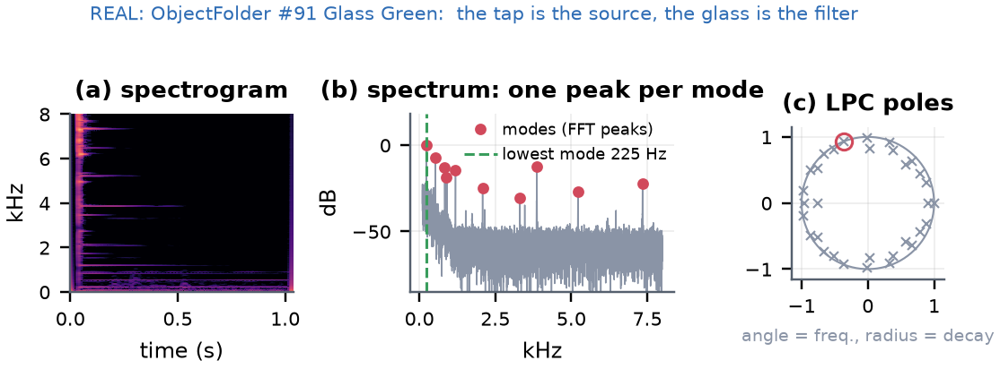
      <figcaption><b>A real strike</b> (ObjectFolder Real, glass #91, anechoic recording): spectrogram, the modes found in the spectrum, and the LPC poles.
        On simulated strikes at 40 dB SNR the pitch error is 0.00 cents and the decay error is 0.3% (STFT) and 1.4% (LPC).</figcaption>
    </figure>
  </section>

  <!-- ===================================================== 04 SEEING -->
  <section id="seeing">
    <span class="secnum">04</span>
    <h2>Seeing: the water line from pixels</h2>
    <div class="read">
      <p>The vision side uses only classical image processing from the course, so every step can be checked by eye.</p>
      <ol class="steps">
        <li><strong>Background.</strong> A morphological closing on a quarter-size image removes the dark glasses and leaves the bright backlight.</li>
        <li><strong>Objects.</strong> Pixels darker than that background, or strongly coloured (the water is dyed with haldi or food colour), pass an Otsu threshold.
          Closing, hole filling and opening turn edges into solid silhouettes; contours give one region per bowl.</li>
        <li><strong>Water line.</strong> In the middle half of each bowl, the median saturation of every row jumps at the water surface. Clear water has no colour,
          so a fallback looks for the brightness step instead.</li>
        <li><strong>Scale.</strong> The fill ratio <i>h</i>/<i>H</i> needs no scale at all. A printed ArUco marker adds centimetres and millilitres
          (volume as a solid of revolution of the bowl's outline).</li>
        <li><strong>Timing.</strong> The level used for a strike is read just <em>before</em> the strike, so the player's hand cannot hide it.</li>
      </ol>
    </div>
    <figure class="fig">
      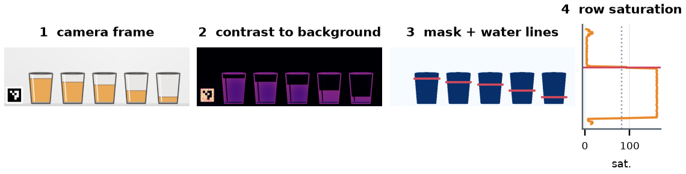
      <figcaption><b>The pipeline on one frame</b> (simulated scene). Panel 4: the saturation of each row of glass 3; the red line is the detected water surface.</figcaption>
    </figure>
    <div class="figgrid">
      <figure class="fig">
        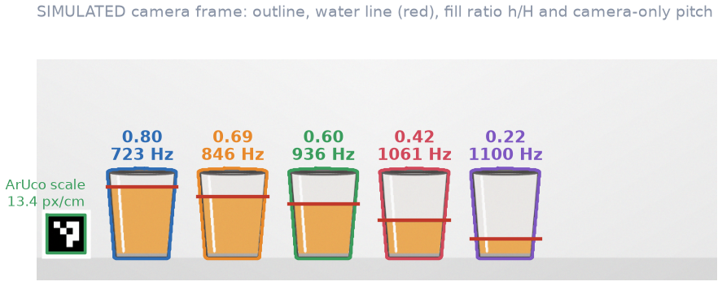
        <figcaption><b>What the camera reports</b>: outline, water line, fill ratio and the pitch it predicts for each glass.</figcaption>
      </figure>
      <figure class="fig">
        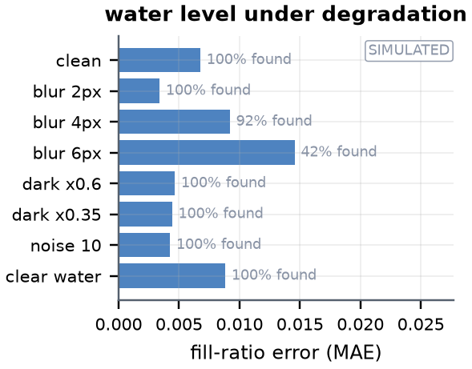
        <figcaption><b>Robustness.</b> Fill-ratio error 0.007 (clean), 0.009 at 4 px blur, 0.009 with clear water.</figcaption>
      </figure>
    </div>
  </section>

  <!-- ===================================================== 05 LAW -->
  <section id="law">
    <span class="secnum">05</span>
    <h2>The law that joins them</h2>
    <div class="read">
      <p>Water presses on the vibrating wall and adds mass, so the pitch falls. A. P. French measured this for wine glasses in 1983:</p>
      <div class="eq">
        <math display="block"><mi>f</mi><mo>=</mo><mfrac><msub><mi>f</mi><mn>0</mn></msub><msqrt><mn>1</mn><mo>+</mo><mi>β</mi><msup><mi>u</mi><mi>n</mi></msup></msqrt></mfrac><mspace width="1.4em"></mspace><mo>⟹</mo><mspace width="1.4em"></mspace><mfrac><mn>1</mn><msup><mi>f</mi><mn>2</mn></msup></mfrac><mo>=</mo><mi>a</mi><mo>+</mo><mi>b</mi><mspace width="0.15em"></mspace><msup><mi>u</mi><mi>n</mi></msup><mo>,</mo><mspace width="1.2em"></mspace><mi>u</mi><mo>=</mo><mfrac><mrow><mi>h</mi><mo>/</mo><mi>H</mi><mo>−</mo><msub><mi>r</mi><mn>0</mn></msub></mrow><mrow><mn>1</mn><mo>−</mo><msub><mi>r</mi><mn>0</mn></msub></mrow></mfrac></math>
      </div>
      <p>Theory says <i>n</i> = 4. Written as 1/<i>f</i>² against <i>u</i><sup><i>n</i></sup>, the law is a straight line, so every tap
        (camera fill, heard pitch) is one point for a Bayesian linear regression. For each candidate <i>n</i> and base offset <i>r</i><sub>0</sub>
        (the glass's thick bottom), the regression's evidence has a closed form, and the best-supported shape wins. The data recover <i>n</i> = 4.25
        by themselves. After a handful of taps the camera alone predicts the pitch of any glass at any water level: <strong>audio teaches vision</strong>.</p>
    </div>
    <div class="demo" id="demo-law">
      <div class="demo-head"><span class="tag">Live</span><span class="hint">Each tap strikes a glass at a random water level: the camera reports the fill, the microphone reports the pitch (both with noise).</span></div>
      <canvas id="cv-law" class="cv cv-law" aria-label="Left: pitch against fill ratio with taps, the learned curve and the true law. Right: the same taps on the straight-line axes."></canvas>
      <div class="readout" id="law-readout" aria-live="polite"></div>
      <div class="controls">
        <button class="btn" id="law-tap" type="button">Tap once</button>
        <button class="btn btn-2" id="law-tap5" type="button">Tap 5 times</button>
        <button class="btn btn-2" id="law-reset" type="button">Start over</button>
      </div>
    </div>
    <figure class="video">
      <video src="media/WaterLoading.mp4" poster="media/WaterLoading.jpg" controls muted playsinline preload="metadata"></video>
      <figcaption><b>Animation.</b> The pitch follows French's curve as the glass fills; on the right axes the same taps lie on a straight line.</figcaption>
    </figure>
  </section>

  <!-- ===================================================== 06 WHICH -->
  <section id="which">
    <span class="secnum">06</span>
    <h2>Which glass rang?</h2>
    <div class="read">
      <p>Sound-source localisation usually matches a sound to how an object <em>looks</em>. Five identical glasses defeat that: they look the same.
        TuneSight uses two physical cues instead.</p>
      <ul class="steps">
        <li><strong>Audio, through physics.</strong> The camera predicts each glass's pitch from its water; the heard pitch is compared with every prediction,
          as a Gaussian in cents.</li>
        <li><strong>Motion.</strong> The striker's tip, the lowest new pixel at the moment of impact, lands near one glass.</li>
      </ul>
      <div class="eq">
        <math display="block"><mi>log</mi><mspace width="0.2em"></mspace><mi>p</mi><mo stretchy="false">(</mo><mi>b</mi><mo>∣</mo><mi>A</mi><mo>,</mo><mi>M</mi><mo stretchy="false">)</mo><mo>=</mo><msub><mi>w</mi><mi>A</mi></msub><mi>log</mi><mspace width="0.2em"></mspace><mi>𝒩</mi><mo stretchy="false">(</mo><mi>c</mi><mo stretchy="false">(</mo><msub><mi>f</mi><mtext>heard</mtext></msub><mo>,</mo><msub><mover accent="true"><mi>f</mi><mo>^</mo></mover><mi>b</mi></msub><mo stretchy="false">)</mo><mo>;</mo><mn>0</mn><mo>,</mo><msubsup><mi>σ</mi><mi>b</mi><mn>2</mn></msubsup><mo stretchy="false">)</mo><mo>+</mo><msub><mi>w</mi><mi>M</mi></msub><mi>log</mi><mspace width="0.2em"></mspace><mi>p</mi><mo stretchy="false">(</mo><mi>M</mi><mo>∣</mo><mi>b</mi><mo stretchy="false">)</mo><mo>+</mo><mi>log</mi><mspace width="0.2em"></mspace><mi>p</mi><mo stretchy="false">(</mo><mi>b</mi><mo stretchy="false">)</mo><mo>+</mo><mtext>const</mtext></math>
      </div>
      <p>The weights fall when a cue is unreliable: low SNR lowers <i>w</i><sub>A</sub>, a hidden striker sets <i>w</i><sub>M</sub> to zero.
        That is the principle of inverse effectiveness from the course: the weaker one sense, the more the other matters. An extra hypothesis,
        "none of the visible glasses", catches sounds that fit no glass.</p>
    </div>
    <div class="demo" id="demo-which">
      <div class="demo-head"><span class="tag">Live</span><span class="hint">Strike a random glass and watch the evidence. Lower the SNR, hide the striker, or give two glasses the same water.</span></div>
      <canvas id="cv-which" class="cv cv-which" aria-label="Five glasses; below them, bars of audio, motion and fused probability for each glass and for none"></canvas>
      <div class="controls">
        <label class="field" for="which-snr">Audio SNR <input type="range" id="which-snr" min="0" max="40" step="1" value="20"><span class="mono" id="which-snr-v">20 dB</span></label>
        <label class="field" for="which-vis"><input type="checkbox" id="which-vis" checked> Striker visible</label>
        <label class="field" for="which-tie"><input type="checkbox" id="which-tie"> Glasses 4 and 5 hold the same water</label>
      </div>
      <div class="controls">
        <button class="btn" id="which-strike" type="button">Strike a random glass</button>
        <button class="btn btn-2" id="which-50" type="button">Strike 50 times</button>
        <button class="btn btn-2" id="which-reset" type="button">Reset score</button>
      </div>
      <div class="readout" id="which-readout" aria-live="polite">No strikes yet.</div>
      <div class="table-wrap">
        <table class="score" id="which-score">
          <thead><tr><th>Method</th><th>Correct</th><th>Strikes</th><th>Accuracy</th></tr></thead>
          <tbody>
            <tr><td><span class="dot" style="background: var(--audio)"></span>Audio through physics</td><td class="num" id="sc-a-c">0</td><td class="num" id="sc-a-n">0</td><td class="num" id="sc-a-p">–</td></tr>
            <tr><td><span class="dot" style="background: var(--motion)"></span>Striker motion</td><td class="num" id="sc-m-c">0</td><td class="num" id="sc-m-n">0</td><td class="num" id="sc-m-p">–</td></tr>
            <tr><td><span class="dot" style="background: var(--fused)"></span>Fused</td><td class="num" id="sc-f-c">0</td><td class="num" id="sc-f-n">0</td><td class="num" id="sc-f-p">–</td></tr>
          </tbody>
        </table>
      </div>
    </div>
    <figure class="video">
      <video src="media/WhichBowl.mp4" poster="media/WhichBowl.jpg" controls muted playsinline preload="metadata"></video>
      <figcaption><b>Animation.</b> When two glasses sound the same, audio splits 50/50 and the striker's motion decides.</figcaption>
    </figure>
  </section>

  <!-- ===================================================== 07 TUNE -->
  <section id="tune">
    <span class="secnum">07</span>
    <h2>Tune by sight</h2>
    <div class="read">
      <p>Choose a raga and the system picks Sa so that every note fits inside the pitch range of its bowl. For each bowl, the inverse of the law gives the
        water level for its note, and the bowl's outline turns that level into millilitres. Water can be added easily but not removed, so tuning follows
        what musicians do: the camera stops the pour <strong>one semitone early</strong>, <strong>one tap</strong> measures how this particular glass differs
        from the shared law, and the camera then guides the final top-up.</p>
    </div>
    <div class="demo" id="demo-tune">
      <div class="demo-head"><span class="tag">Live</span><span class="hint">This glass is slightly different from the others, as real glasses are. Hold "Pour", stop when told, tap, then top up.</span></div>
      <canvas id="cv-tune" class="cv cv-tune" aria-label="A glass with its water level on the left; a meter of camera-predicted pitch against the target on the right"></canvas>
      <div class="controls">
        <label class="field" for="tune-note">Target note
          <select id="tune-note">
            <option value="0">Sa · 640 Hz</option><option value="1">Re · 720 Hz</option><option value="2" selected>Ga · 800 Hz</option>
            <option value="3">Pa · 960 Hz</option><option value="4">Dha · 1067 Hz</option>
          </select>
        </label>
        <button class="btn" id="tune-pour" type="button">Hold to pour</button>
        <button class="btn btn-2" id="tune-drain" type="button">Hold to remove water</button>
        <button class="btn" id="tune-tap" type="button">Tap the glass</button>
        <button class="btn btn-2" id="tune-new" type="button">New glass</button>
      </div>
      <div class="readout" id="tune-readout" aria-live="polite"></div>
    </div>
    <figure class="video">
      <video src="media/TuneBySight.mp4" poster="media/TuneBySight.jpg" controls muted playsinline preload="metadata"></video>
      <figcaption><b>Animation.</b> Step 1 stops a semitone early; one tap measures the glass's offset; step 2 lands on the note.</figcaption>
    </figure>
  </section>

  <!-- ===================================================== 08 ANY CONTAINER -->
  <section id="any">
    <span class="secnum">08</span>
    <h2>Any container: shape and opaque cups</h2>
    <div class="read">
      <p>The jal tarang uses identical bowls, but the idea is more general. From the outline the camera also measures each container's
        <strong>radius</strong> and height (straight walls fitted to the silhouette; the printed marker gives centimetres), and from the radius
        profile its capacity in millilitres. French's thin-wall model says how the shape sets the two numbers of the law:</p>
    </div>
    <div class="eq">
      <math display="block"><msub><mi>f</mi><mn>0</mn></msub><mo>∝</mo><mfrac><mi>a</mi><msup><mi>R</mi><mn>2</mn></msup></mfrac><mspace width="2em"></mspace><mi>β</mi><mo>∝</mo><mfrac><mi>R</mi><mi>a</mi></mfrac></math>
    </div>
    <div class="read">
      <p>A wider glass sounds lower, and water lowers it more. The camera sees <i>R</i> and <i>H</i>; only the wall thickness <i>a</i> is hidden.
        Glasses of one family share it, so <strong>two constants</strong> fitted on a few tapped glasses predict a new glass from its shape alone.
        Run backwards, the law turns a tap into a water level: an <strong>opaque cup</strong> can be heard instead of seen, except near empty,
        where the law is too flat.</p>
    </div>
    <div class="demo" id="demo-any">
      <div class="demo-head"><span class="tag">Live</span><span class="hint">Design a glass: change its radius, height and wall, then the water. Tap to hear it.</span></div>
      <canvas id="cv-any" class="cv cv-any" aria-label="A glass drawn to scale on the left; its pitch against water level on the right, with the zone where sound cannot tell the level"></canvas>
      <div class="controls">
        <label class="field" for="any-r">Radius <input type="range" id="any-r" min="2.5" max="4.5" step="0.1" value="3.5"><span class="mono" id="any-r-v"></span></label>
        <label class="field" for="any-h">Height <input type="range" id="any-h" min="7" max="12" step="0.5" value="9"><span class="mono" id="any-h-v"></span></label>
        <label class="field" for="any-a">Wall <input type="range" id="any-a" min="1" max="2.5" step="0.1" value="1.5"><span class="mono" id="any-a-v"></span></label>
        <label class="field" for="any-f">Water <input type="range" id="any-f" min="0" max="0.9" step="0.01" value="0.5"><span class="mono" id="any-f-v"></span></label>
        <button class="btn" id="any-tap" type="button">Tap the glass</button>
      </div>
      <div class="readout" id="any-readout" aria-live="polite"></div>
    </div>
    <div class="demo" id="demo-cup">
      <div class="demo-head"><span class="tag">Live</span><span class="hint">An opaque cup with a hidden amount of water. Tap it, read the level from the pitch, then reveal.</span></div>
      <canvas id="cv-cup" class="cv cv-cup" aria-label="An opaque cup; after a tap, the water level estimated from the pitch, and the true level when revealed"></canvas>
      <div class="controls">
        <button class="btn" id="cup-tap" type="button">Tap the cup</button>
        <button class="btn btn-2" id="cup-reveal" type="button">Reveal the water</button>
        <button class="btn btn-2" id="cup-new" type="button">New hidden level</button>
      </div>
      <div class="readout" id="cup-readout" aria-live="polite"></div>
    </div>
    <figure class="video">
      <video src="media/AnyContainer.mp4" poster="media/AnyContainer.jpg" controls muted playsinline preload="metadata"></video>
      <figcaption><b>Animation (ManimGL).</b> Wider glasses sound lower (f₀ ∝ 1/R²); an opaque cup's level is read from its pitch.</figcaption>
    </figure>
    <div class="figgrid">
      <figure class="fig">
        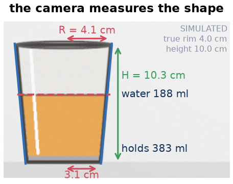
        <figcaption><b>What the camera measures.</b> Radius within <b>0.2 mm</b> (0.9 mm with the camera farther away),
          capacity within 4%.</figcaption>
      </figure>
      <figure class="fig">
        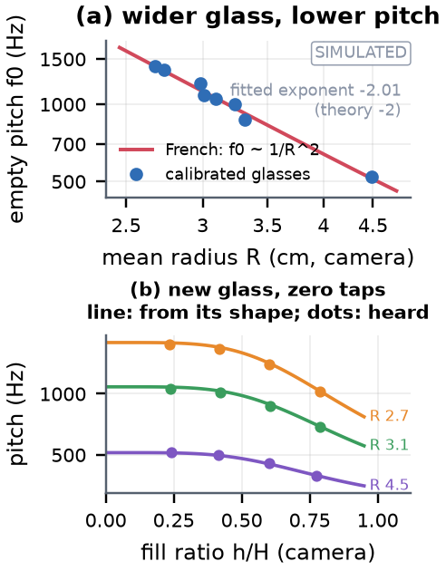
        <figcaption><b>One law, any glass.</b> The fitted radius exponent is -2.01 (French: −2); new glasses follow the curves
          predicted from their shape alone.</figcaption>
      </figure>
    </div>
  </section>

  <!-- ===================================================== 09 RESULTS -->
  <section id="results">
    <span class="secnum">09</span>
    <h2>Results</h2>
    <div class="read">
      <p>All experiments are produced by one script, <code>scripts/evaluate.py</code>, and every figure says whether its data are simulated
        (with known ground truth) or real. Real audio comes from ObjectFolder Real, a public dataset of objects struck in an anechoic chamber.</p>
    </div>
    <div class="figgrid">
      <figure class="fig">
        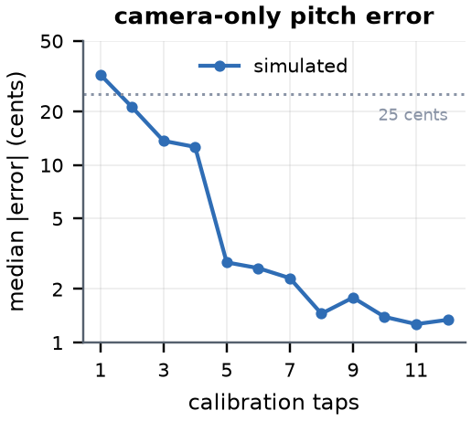
        <figcaption><b>Audio teaches vision.</b> Median camera-only pitch error: 32 cents after 1 tap, <b>2.8 cents after 5</b>, 1.4 after 10.</figcaption>
      </figure>
      <figure class="fig">
        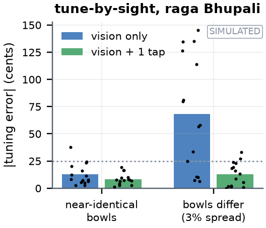
        <figcaption><b>Tune by sight</b> (raga Bhupali). Mean error 12.7 → <b>8.4 cents</b> for near-identical glasses,
          68.2 → <b>12.9 cents</b> when glasses differ by 3%.</figcaption>
      </figure>
    </div>
    <figure class="fig">
      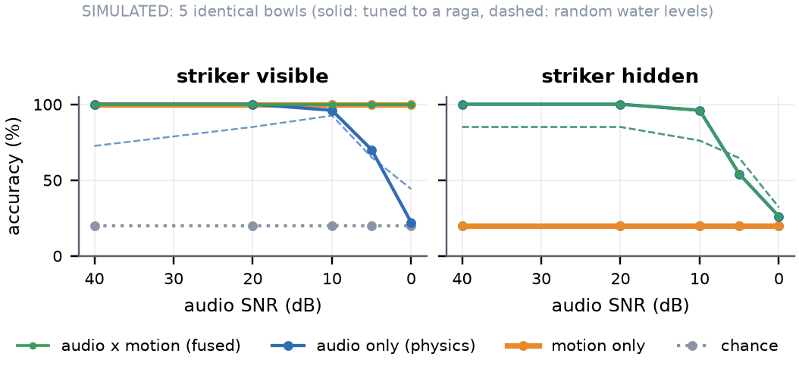
      <figcaption><b>Which glass rang</b> (five identical glasses). Tuned set, striker hidden: audio physics alone <b>96%</b> down to 10 dB.
        At 0 dB the striker's motion carries it: fused <b>100%</b> against 22% for audio alone. Chance is 20%.</figcaption>
    </figure>
    <figure class="fig">
      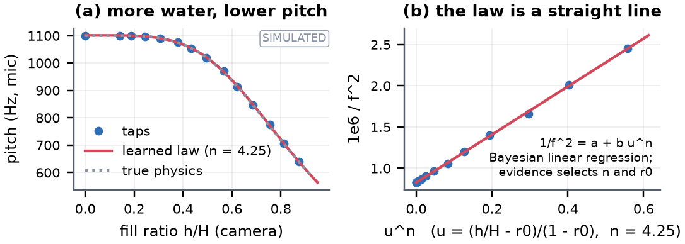
      <figcaption><b>The learned law.</b> Bayesian evidence selects n = 4.25 and base offset r₀ = 0.02; theory says n = 4.</figcaption>
    </figure>
    <div class="figgrid">
      <figure class="fig">
        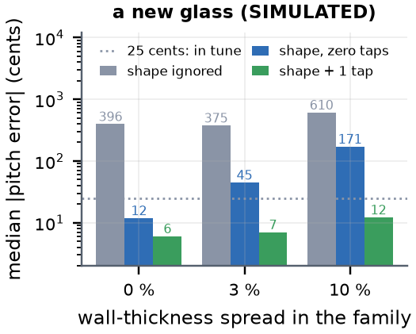
        <figcaption><b>A new glass.</b> Ignoring its shape: 375 cents off. Its shape alone: <b>45 cents</b> (3% wall spread;
          12 with equal walls). One check tap: <b>7 cents</b>. The hidden wall thickness sets the limit.</figcaption>
      </figure>
      <figure class="fig">
        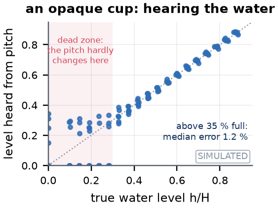
        <figcaption><b>An opaque cup.</b> Level from the pitch within <b>1.2%</b> of the height above 35% full; below 30% the law is
          too flat (14% error), because a tap varies more than a little water changes the pitch.</figcaption>
      </figure>
    </div>
    <h3>What is new here</h3>
    <div class="table-wrap">
      <table class="plain">
        <thead><tr><th>Already published</th><th>What TuneSight does</th></tr></thead>
        <tbody>
          <tr><td>Material recognition from image and impact sound (ObjectFolder benchmark, 2023; Shape and Material from Sound, 2017)</td><td>Not claimed. Only the modal (pole) model of sound is reused.</td></tr>
          <tr><td>Liquid level from the sound of <em>pouring</em> (PouringNet, 2019; audio-visual pouring networks, 2019)</td><td>Uses the <em>struck</em> resonance and a physical law, with the camera as teacher.</td></tr>
          <tr><td>Sound-source localisation by appearance (Visually Indicated Sounds, 2016)</td><td>Identical glasses: physics plus striker motion instead of appearance.</td></tr>
          <tr><td>Jal tarang apps, which are virtual instruments</td><td>Tunes and transcribes a real instrument by sight and sound.</td></tr>
        </tbody>
      </table>
    </div>
    <h3>Course concepts used</h3>
    <div class="table-wrap">
      <table class="plain">
        <thead><tr><th>Concept</th><th>Where it is used</th></tr></thead>
        <tbody>
          <tr><td>Sampling, DFT/FFT, windowing, zero padding</td><td>Mode frequencies to a hundredth of a cent (parabolic peak interpolation)</td></tr>
          <tr><td>STFT and spectrogram</td><td>Decay rate of each mode from the slope of its band energy</td></tr>
          <tr><td>Convolution, impulse response, LTI systems</td><td>The bowl as a filter; the tap as the source; room reverberation in the simulator</td></tr>
          <tr><td>Linear prediction, AR models, source–filter model</td><td>Covariance-method LPC: poles give frequency and damping; resynthesis</td></tr>
          <tr><td>Thresholding, morphology, binary images, contours</td><td>Bowl silhouettes, hole filling, connected regions</td></tr>
          <tr><td>Colour spaces, intensity profiles</td><td>Water line from HSV saturation; brightness step for clear water</td></tr>
          <tr><td>Camera geometry, fiducial markers, solids of revolution</td><td>Radius, height and capacity of each container in cm and ml</td></tr>
          <tr><td>Regression, vector spaces, projections</td><td>Bayesian linear regression of 1/f² on uⁿ; model evidence; the family's shape constants</td></tr>
          <tr><td>Multisensory integration, inverse effectiveness</td><td>Reliability-weighted fusion of audio and motion cues</td></tr>
        </tbody>
      </table>
    </div>
  </section>

  <!-- ===================================================== 09 RUN -->
  <section id="run">
    <span class="secnum">10</span>
    <h2>Run it yourself</h2>
    <div class="read">
      <p>The live demo is a desktop app: video on the left with every bowl, water line and target; spectrum, LPC poles, the learned law and the cue bars on the right.
        It runs with a webcam and the laptop microphone, or in a simulation mode with no hardware at all.</p>
    </div>
    <figure class="fig">
      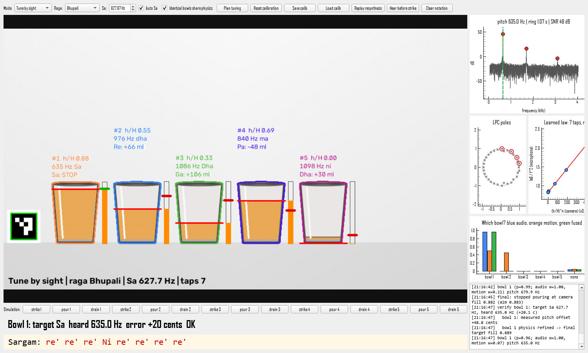
      <figcaption><b>The desktop app</b> in simulation mode, tuning glass 1 to Sa after one verification tap.</figcaption>
    </figure>
    <pre><code># one-time setup (a separate environment; Anaconda is not touched)
uv venv --managed-python --python 3.12 .venv
uv pip install --python .venv -r requirements.txt

python -m pytest -q                      # 16 automated checks
python app/app.py --sim                  # live demo without hardware
python app/app.py                        # webcam + microphone
python scripts/evaluate.py               # every experiment -> results/RESULTS.md
python scripts/build_slides.py           # IITG Beamer deck -> slides/TuneSight_slides.pdf
python animations/render.py              # ManimGL animations -> web/media/
python scripts/build_web.py              # this page -> web/index.html</code></pre>
    <h3>Real bowls in four steps</h3>
    <ol class="steps read">
      <li>Print <code>results/marker_4cm.png</code> so the black square is 4 cm wide (<code>scripts/make_marker.py</code>).</li>
      <li>Line up 5 identical glasses on a white sheet with a lamp behind; colour the water with haldi or food colour.</li>
      <li>Record a session: <code>scripts/record_session.py</code>, then fit the law: <code>scripts/calibrate.py data/own/&lt;session&gt; --shared</code>.</li>
      <li>Start <code>app/app.py</code>: it loads the calibration, and you can play, transcribe and tune.</li>
    </ol>
  </section>

  </div></div>
</main>

<footer class="gutter">
  <div class="wrap">
    TuneSight · DA321 course project, IIT Guwahati. Animations made with <a href="https://github.com/3b1b/manim" target="_blank" rel="noopener">ManimGL</a>.
    Real recordings: <a href="https://objectfolder.stanford.edu/" target="_blank" rel="noopener">ObjectFolder Real</a>.
    Water-loading law: A. P. French, "In vino veritas", American Journal of Physics 51 (1983) 688–694.
    Every sound on this page is synthesised in your browser from the same physics model; nothing is recorded.
  </div>
</footer>

<script>
(function () {
  'use strict';
  var root = document.documentElement;

  /* ---------------------------------------------------------------- theme */
  var THEMES = ['auto', 'light', 'dark'];
  var themeBtn = document.getElementById('theme-btn');
  function applyTheme(t) {
    if (t === 'auto') root.removeAttribute('data-theme'); else root.setAttribute('data-theme', t);
    themeBtn.textContent = 'theme: ' + t;
    redrawAll();
  }
  var savedTheme = 'auto';
  try { savedTheme = localStorage.getItem('tunesight-theme') || 'auto'; } catch (e) { savedTheme = 'auto'; }
  themeBtn.addEventListener('click', function () {
    var cur = root.getAttribute('data-theme') || 'auto';
    var next = THEMES[(THEMES.indexOf(cur) + 1) % THEMES.length];
    try { localStorage.setItem('tunesight-theme', next); } catch (e) { /* storage unavailable */ }
    applyTheme(next);
  });
  if (window.matchMedia) {
    var mq = window.matchMedia('(prefers-color-scheme: dark)');
    if (mq.addEventListener) mq.addEventListener('change', function () { redrawAll(); });
  }

  /* ---------------------------------------------------------------- physics shared with the Python package */
  var F0 = 1100, BETA = 3.0, NEXP = 4, SA = 640;
  function clamp(x, a, b) { return Math.max(a, Math.min(b, x)); }
  function french(h) { return F0 / Math.sqrt(1 + BETA * Math.pow(clamp(h, 0, 1.2), NEXP)); }
  function frenchInv(f) { if (f >= F0) return 0; var x = (Math.pow(F0 / f, 2) - 1) / BETA; return Math.pow(Math.max(x, 0), 1 / NEXP); }
  function cents(a, b) { return 1200 * Math.log2(a / b); }
  function gauss() { var u = 1 - Math.random(), v = Math.random(); return Math.sqrt(-2 * Math.log(u)) * Math.cos(2 * Math.PI * v); }
  var SWARAS = [['Sa', 1], ['re', 16 / 15], ['Re', 9 / 8], ['ga', 6 / 5], ['Ga', 5 / 4], ['ma', 4 / 3], ['Ma', 45 / 32], ['Pa', 3 / 2],
    ['dha', 8 / 5], ['Dha', 5 / 3], ['ni', 9 / 5], ['Ni', 15 / 8]];
  var BHUPALI = [1, 9 / 8, 5 / 4, 3 / 2, 5 / 3];
  var BHUPALI_NAMES = ['Sa', 'Re', 'Ga', 'Pa', 'Dha'];
  function swara(f) {
    var best = null, base = Math.floor(Math.log2(f / SA));
    for (var o = base - 1; o <= base + 1; o++) {
      for (var i = 0; i < SWARAS.length; i++) {
        var d = cents(f, SA * SWARAS[i][1] * Math.pow(2, o));
        if (!best || Math.abs(d) < Math.abs(best.dev)) best = { name: SWARAS[i][0], oct: o, dev: d };
      }
    }
    var mark = best.oct > 0 ? "'".repeat(best.oct) : (best.oct < 0 ? '.'.repeat(-best.oct) : '');
    return { label: best.name + mark, dev: best.dev };
  }
  function fmtC(c) { return (c >= 0 ? '+' : '−') + Math.abs(c).toFixed(0); }

  /* ---------------------------------------------------------------- sound: decaying modes, synthesised */
  var actx = null;
  function audioCtx() {
    if (!actx) { var C = window.AudioContext || window.webkitAudioContext; if (!C) return null; actx = new C(); }
    if (actx.state === 'suspended') actx.resume();
    return actx;
  }
  var RATIOS = [1, 2.62, 4.71, 7.18], AMPS = [1, 0.35, 0.18, 0.08];
  function glassModes(f1, fill) {
    var eta = 1.2e-3 * (1 + 2 * fill * fill);
    return RATIOS.map(function (r, k) { var f = f1 * r * (1 + 0.02 * k * fill); return { f: f, sigma: Math.PI * f * eta * (1 + 0.3 * k), a: AMPS[k] }; });
  }
  function playModes(modes, opts) {
    opts = opts || {};
    var ctx = audioCtx(); if (!ctx) return;
    var sr = ctx.sampleRate, dur = opts.dur || 1.6, n = Math.floor(sr * dur);
    var buf = ctx.createBuffer(1, n, sr), d = buf.getChannelData(0), i;
    modes.forEach(function (m) {
      if (m.f <= 20 || m.f >= sr / 2 - 50) return;
      var w = 2 * Math.PI * m.f / sr, dec = Math.exp(-Math.max(m.sigma, 0.5) / sr), ph = Math.random() * 6.283, amp = m.a;
      for (i = 0; i < n; i++) { d[i] += amp * Math.sin(w * i + ph); amp *= dec; }
    });
    var nc = Math.floor(0.002 * sr);
    for (i = 0; i < nc; i++) d[i] += 0.5 * (Math.random() * 2 - 1) * Math.sin(Math.PI * i / nc);
    if (opts.noiseDb !== undefined) {
      var rms = 0, m0 = Math.floor(0.1 * sr);
      for (i = 0; i < m0; i++) rms += d[i] * d[i];
      var s = Math.sqrt(rms / m0) * Math.pow(10, -opts.noiseDb / 20) * 1.73;
      for (i = 0; i < n; i++) d[i] += s * (Math.random() * 2 - 1);
    }
    var pk = 0; for (i = 0; i < n; i++) pk = Math.max(pk, Math.abs(d[i]));
    var g = 0.45 / (pk || 1), fade = Math.floor(0.03 * sr);
    for (i = 0; i < n; i++) { d[i] *= g; if (i > n - fade) d[i] *= (n - i) / fade; }
    var src = ctx.createBufferSource(); src.buffer = buf; src.connect(ctx.destination); src.start();
  }

  /* ---------------------------------------------------------------- canvas helpers */
  function css(name) { return getComputedStyle(root).getPropertyValue(name).trim(); }
  function fit(cv) {
    var dpr = window.devicePixelRatio || 1, w = cv.clientWidth, h = cv.clientHeight;
    if (cv.width !== Math.round(w * dpr) || cv.height !== Math.round(h * dpr)) { cv.width = Math.round(w * dpr); cv.height = Math.round(h * dpr); }
    var ctx = cv.getContext('2d'); ctx.setTransform(dpr, 0, 0, dpr, 0, 0); ctx.clearRect(0, 0, w, h);
    return { ctx: ctx, w: w, h: h };
  }
  function font(px, kind) { return (kind === 'mono' ? '' : '') + px + 'px ' + (kind === 'mono' ? css('--f-mono') : css('--f-body')); }
  function glassPath(ctx, cx, base, W, H) {
    var wb = W * 0.4, wt = W * 0.5;
    ctx.beginPath(); ctx.moveTo(cx - wb, base); ctx.lineTo(cx + wb, base); ctx.lineTo(cx + wt, base - H); ctx.lineTo(cx - wt, base - H); ctx.closePath();
  }
  function drawGlass(ctx, cx, base, W, H, fill, o) {
    o = o || {};
    var wb = W * 0.4, wt = W * 0.5;
    glassPath(ctx, cx, base, W, H); ctx.fillStyle = css('--glass-fill'); ctx.fill();
    if (fill > 0.004) {
      var hh = fill * H, ww = wb + (wt - wb) * fill;
      ctx.beginPath(); ctx.moveTo(cx - wb + 3, base - 2); ctx.lineTo(cx + wb - 3, base - 2); ctx.lineTo(cx + ww - 3, base - hh); ctx.lineTo(cx - ww + 3, base - hh); ctx.closePath();
      ctx.globalAlpha = 0.85; ctx.fillStyle = css('--water'); ctx.fill(); ctx.globalAlpha = 1;
    }
    glassPath(ctx, cx, base, W, H);
    if (o.glow) { ctx.save(); ctx.shadowColor = o.glow; ctx.shadowBlur = 16; ctx.lineWidth = 4; ctx.strokeStyle = o.glow; ctx.stroke(); ctx.restore(); }
    ctx.lineWidth = o.lw || 2.2; ctx.strokeStyle = o.stroke || css('--glass'); ctx.stroke();
  }
  function axisLabel(ctx, txt, x, y, align, color, size) {
    ctx.fillStyle = color || css('--muted'); ctx.font = font(size || 11, 'mono'); ctx.textAlign = align || 'left'; ctx.fillText(txt, x, y);
  }
  var redrawers = [];
  function redrawAll() { redrawers.forEach(function (f) { f(); }); }
  var resizeTimer = null;
  window.addEventListener('resize', function () { clearTimeout(resizeTimer); resizeTimer = setTimeout(redrawAll, 60); });

  /* ================================================================ 01 PLAY THE GLASSES */
  (function () {
    var cv = document.getElementById('cv-play'), out = document.getElementById('play-readout');
    var fills = [], last = null, glowUntil = 0, drag = null;
    function tune() { fills = BHUPALI.map(function (r) { return frenchInv(SA * r); }); }
    tune();
    function layout(w, h) {
      var W = Math.min(w / 7.2, 130), H = W * 1.4, base = h * 0.62;
      return { W: W, H: H, base: base, cx: function (i) { return w * (i + 1) / 6; } };
    }
    function hit(x, y) {
      var r = cv.getBoundingClientRect(), L = layout(r.width, r.height);
      for (var i = 0; i < 5; i++) { var cx = L.cx(i); if (Math.abs(x - cx) < L.W * 0.55 && y > L.base - L.H - 10 && y < L.base + 8) return i; }
      return -1;
    }
    function draw() {
      var c = fit(cv), ctx = c.ctx, w = c.w, h = c.h, L = layout(w, h), now = performance.now();
      for (var i = 0; i < 5; i++) {
        var cx = L.cx(i), f = french(fills[i]), s = swara(f);
        var glow = last && last.i === i && now < glowUntil ? css('--accent') : null;
        drawGlass(ctx, cx, L.base, L.W, L.H, fills[i], { glow: glow });
        ctx.textAlign = 'center';
        ctx.fillStyle = css('--ink'); ctx.font = '600 ' + font(14);
        ctx.fillText(f.toFixed(0) + ' Hz', cx, L.base - L.H - 12);
        ctx.fillStyle = css('--label'); ctx.font = font(13, 'mono');
        ctx.fillText((i + 1) + ' · ' + s.label, cx, L.base + 20);
        ctx.fillStyle = css('--muted'); ctx.font = font(11, 'mono');
        ctx.fillText('h/H ' + fills[i].toFixed(2), cx, L.base + 36);
      }
      /* spectrum strip of the last strike: modes on a log axis */
      var y0 = h * 0.80, y1 = h - 14, x0 = 34, x1 = w - 14;
      ctx.strokeStyle = css('--line'); ctx.lineWidth = 1; ctx.beginPath(); ctx.moveTo(x0, y1); ctx.lineTo(x1, y1); ctx.stroke();
      var lf = function (f) { return x0 + (Math.log(f / 300) / Math.log(9000 / 300)) * (x1 - x0); };
      [500, 1000, 2000, 4000, 8000].forEach(function (f) { axisLabel(ctx, f >= 1000 ? f / 1000 + 'k' : String(f), lf(f), h - 2, 'center'); });
      axisLabel(ctx, 'Hz', x0 - 4, h - 2, 'right');
      axisLabel(ctx, 'modes of the last strike', x0, y0 - 6, 'left');
      if (last) {
        last.modes.forEach(function (m, k) {
          if (m.f > 9000) return;
          var x = lf(m.f), top = y1 - (y1 - y0) * m.a;
          ctx.strokeStyle = k === 0 ? css('--accent') : css('--audio'); ctx.lineWidth = k === 0 ? 3 : 2;
          ctx.beginPath(); ctx.moveTo(x, y1); ctx.lineTo(x, top); ctx.stroke();
          ctx.beginPath(); ctx.arc(x, top, 3, 0, 6.283); ctx.fillStyle = ctx.strokeStyle; ctx.fill();
          if (k === 0) axisLabel(ctx, m.f.toFixed(0) + ' Hz', x + 6, top + 4, 'left', css('--ink'));
        });
      }
      if (now < glowUntil) requestAnimationFrame(draw);
    }
    function strike(i) {
      var f = french(fills[i]), s = swara(f);
      last = { i: i, modes: glassModes(f, fills[i]) };
      playModes(last.modes);
      glowUntil = performance.now() + 650;
      out.textContent = 'Glass ' + (i + 1) + ': water h/H = ' + fills[i].toFixed(2) + '  →  ' + f.toFixed(1) + ' Hz  →  ' + s.label + ' (' + fmtC(s.dev) + ' cents from the note; Sa = ' + SA + ' Hz)';
      draw();
    }
    cv.addEventListener('pointerdown', function (e) {
      var r = cv.getBoundingClientRect(), x = e.clientX - r.left, y = e.clientY - r.top, i = hit(x, y);
      if (i < 0) return;
      drag = { i: i, y: y, f0: fills[i], moved: false };
      cv.setPointerCapture(e.pointerId);
    });
    cv.addEventListener('pointermove', function (e) {
      if (!drag) return;
      var r = cv.getBoundingClientRect(), y = e.clientY - r.top, L = layout(r.width, r.height);
      if (Math.abs(y - drag.y) > 5) drag.moved = true;
      if (drag.moved) {
        fills[drag.i] = clamp(drag.f0 + (drag.y - y) / L.H, 0, 0.95);
        var f = french(fills[drag.i]), s = swara(f);
        out.textContent = 'Glass ' + (drag.i + 1) + ': h/H = ' + fills[drag.i].toFixed(2) + '  →  ' + f.toFixed(1) + ' Hz  (' + s.label + ' ' + fmtC(s.dev) + ' cents). Release, then click to hear it.';
        draw();
      }
    });
    cv.addEventListener('pointerup', function () { if (drag && !drag.moved) strike(drag.i); drag = null; });
    cv.addEventListener('pointercancel', function () { drag = null; });
    cv.addEventListener('keydown', function (e) { var k = parseInt(e.key, 10); if (k >= 1 && k <= 5) { strike(k - 1); e.preventDefault(); } });
    document.getElementById('play-tune').addEventListener('click', function () { tune(); last = null; out.textContent = 'Tuned to Bhupali: Sa Re Ga Pa Dha.'; draw(); });
    document.getElementById('play-random').addEventListener('click', function () { fills = fills.map(function () { return Math.random() * 0.9; }); last = null; out.textContent = 'Random water levels. Strike the glasses to hear them.'; draw(); });
    document.getElementById('play-scale').addEventListener('click', function () { [0, 1, 2, 3, 4].forEach(function (i) { setTimeout(function () { strike(i); }, i * 420); }); });
    redrawers.push(draw);
  })();

  /* ================================================================ 03 POLE EXPLORER */
  (function () {
    var cv = document.getElementById('cv-pole'), out = document.getElementById('pole-readout');
    var FS = 8000, pole = { r: 0.998, th: 2 * Math.PI * 880 / FS }, dragging = false;
    function params() { var f = pole.th * FS / (2 * Math.PI), sigma = -Math.log(pole.r) * FS; return { f: f, sigma: sigma, t60: 6.91 / sigma }; }
    function geom(w, h) { var R = Math.min(h * 0.40, w * 0.18); return { R: R, cx: R + 34, cy: h / 2 }; }
    function draw() {
      var c = fit(cv), ctx = c.ctx, w = c.w, h = c.h, g = geom(w, h), p = params();
      ctx.strokeStyle = css('--line'); ctx.lineWidth = 1;
      ctx.beginPath(); ctx.moveTo(g.cx - g.R * 1.25, g.cy); ctx.lineTo(g.cx + g.R * 1.25, g.cy); ctx.moveTo(g.cx, g.cy - g.R * 1.2); ctx.lineTo(g.cx, g.cy + g.R * 1.2); ctx.stroke();
      ctx.strokeStyle = css('--muted'); ctx.beginPath(); ctx.arc(g.cx, g.cy, g.R, 0, 6.283); ctx.stroke();
      axisLabel(ctx, 'z-plane', g.cx - g.R * 1.2, 16, 'left');
      axisLabel(ctx, 'unit circle', g.cx + g.R * 0.72, g.cy - g.R * 0.82, 'left');
      var px = g.cx + g.R * pole.r * Math.cos(pole.th), py = g.cy - g.R * pole.r * Math.sin(pole.th);
      var qy = g.cy + g.R * pole.r * Math.sin(pole.th);
      ctx.strokeStyle = css('--accent'); ctx.setLineDash([3, 3]); ctx.beginPath(); ctx.moveTo(g.cx, g.cy); ctx.lineTo(px, py); ctx.stroke(); ctx.setLineDash([]);
      [[px, py, 9], [px, qy, 6]].forEach(function (pt, k) {
        ctx.strokeStyle = css('--bad'); ctx.lineWidth = 2.4;
        ctx.beginPath(); ctx.moveTo(pt[0] - pt[2], pt[1] - pt[2]); ctx.lineTo(pt[0] + pt[2], pt[1] + pt[2]); ctx.moveTo(pt[0] + pt[2], pt[1] - pt[2]); ctx.lineTo(pt[0] - pt[2], pt[1] + pt[2]); ctx.stroke();
        if (k === 0) { ctx.beginPath(); ctx.arc(pt[0], pt[1], 15, 0, 6.283); ctx.strokeStyle = css('--accent'); ctx.lineWidth = 1.2; ctx.stroke(); }
      });
      axisLabel(ctx, 'drag me', px + 18, py - 10, 'left', css('--accent'));
      /* waveform */
      var x0 = g.cx + g.R * 1.45 + 20, x1 = w - 12, y0 = 24, y1 = h - 26, ym = (y0 + y1) / 2, A = (y1 - y0) / 2 * 0.92, T = 0.6;
      ctx.strokeStyle = css('--line'); ctx.lineWidth = 1; ctx.beginPath(); ctx.moveTo(x0, ym); ctx.lineTo(x1, ym); ctx.stroke();
      axisLabel(ctx, 'impulse response y(t)', x0, 16, 'left');
      [0, 0.2, 0.4, 0.6].forEach(function (t) { axisLabel(ctx, t.toFixed(1) + ' s', x0 + (x1 - x0) * t / T, h - 8, 'center'); });
      ctx.strokeStyle = css('--audio'); ctx.lineWidth = 1; ctx.beginPath();
      var steps = Math.max(200, Math.floor((x1 - x0) * 3));
      for (var k = 0; k <= steps; k++) {
        var t = T * k / steps, y = Math.exp(-p.sigma * t) * Math.sin(2 * Math.PI * p.f * t);
        var X = x0 + (x1 - x0) * k / steps, Y = ym - A * y;
        if (k === 0) ctx.moveTo(X, Y); else ctx.lineTo(X, Y);
      }
      ctx.stroke();
      ctx.strokeStyle = css('--label'); ctx.lineWidth = 2; ctx.beginPath();
      for (k = 0; k <= 200; k++) { t = T * k / 200; X = x0 + (x1 - x0) * k / 200; Y = ym - A * Math.exp(-p.sigma * t); if (k === 0) ctx.moveTo(X, Y); else ctx.lineTo(X, Y); }
      ctx.stroke();
      axisLabel(ctx, 'envelope e^(−σt)', x0 + (x1 - x0) * 0.62, ym - A * 0.9, 'left', css('--label'));
      out.textContent = 'angle → pitch f = ' + p.f.toFixed(0) + ' Hz    radius r = ' + pole.r.toFixed(4) + ' → decay σ = ' + p.sigma.toFixed(1) + ' /s, rings for ' + Math.min(p.t60, 99).toFixed(2) + ' s (−60 dB)';
    }
    function setFrom(e) {
      var r = cv.getBoundingClientRect(), g = geom(r.width, r.height), x = e.clientX - r.left - g.cx, y = -(e.clientY - r.top - g.cy);
      var th = Math.atan2(Math.abs(y), x), rad = Math.hypot(x, y) / g.R;
      pole.th = clamp(th, 2 * Math.PI * 150 / FS, 2 * Math.PI * 3200 / FS);
      pole.r = clamp(rad, 0.90, 0.9995);
      draw();
    }
    cv.addEventListener('pointerdown', function (e) {
      var r = cv.getBoundingClientRect(), g = geom(r.width, r.height);
      if (e.clientX - r.left > g.cx + g.R * 1.4) return;
      dragging = true; cv.setPointerCapture(e.pointerId); setFrom(e);
    });
    cv.addEventListener('pointermove', function (e) { if (dragging) setFrom(e); });
    cv.addEventListener('pointerup', function () { dragging = false; });
    cv.addEventListener('pointercancel', function () { dragging = false; });
    document.getElementById('pole-play').addEventListener('click', function () { var p = params(); playModes([{ f: p.f, sigma: p.sigma, a: 1 }], { dur: Math.min(2.5, Math.max(0.4, p.t60 + 0.1)) }); });
    redrawers.push(draw);
  })();

  /* ================================================================ 05 AUDIO TEACHES VISION */
  (function () {
    var cv = document.getElementById('cv-law'), out = document.getElementById('law-readout');
    var LN2 = Math.log(2), taps = [], fitRes = null;
    function blr(n) {
      var f0p = 1150, a0 = 1 / (f0p * f0p), sa = 2 * LN2 * (200 / 1200) * a0, b0 = a0, sb = 3 * a0;
      var P00 = 1 / (sa * sa), P01 = 0, P11 = 1 / (sb * sb), q0 = a0 / (sa * sa), q1 = b0 / (sb * sb), slog = 0, yy = 0;
      taps.forEach(function (t) {
        var y = 1 / (t.f * t.f), s = 2 * LN2 * (8 / 1200) * y, x = Math.pow(clamp(t.r, 0, 1.2), n), is2 = 1 / (s * s);
        P00 += is2; P01 += x * is2; P11 += x * x * is2; q0 += y * is2; q1 += x * y * is2; slog += Math.log(s); yy += y * y * is2;
      });
      var det = P00 * P11 - P01 * P01, C00 = P11 / det, C01 = -P01 / det, C11 = P00 / det;
      var m0 = C00 * q0 + C01 * q1, m1 = C01 * q0 + C11 * q1;
      var mPm = m0 * (P00 * m0 + P01 * m1) + m1 * (P01 * m0 + P11 * m1);
      var ev = -0.5 * taps.length * Math.log(2 * Math.PI) - slog - 0.5 * (Math.log(sa * sa) + Math.log(sb * sb))
        + 0.5 * Math.log(C00 * C11 - C01 * C01) - 0.5 * (yy + a0 * a0 / (sa * sa) + b0 * b0 / (sb * sb) - mPm);
      return { n: n, a: m0, b: m1, ev: ev };
    }
    function refit() {
      if (!taps.length) { fitRes = null; return; }
      var best = null, spread = Math.max.apply(null, taps.map(function (t) { return t.r; })) - Math.min.apply(null, taps.map(function (t) { return t.r; }));
      if (taps.length < 5 || spread < 0.3) { best = blr(4); }
      else {
        for (var n = 2; n <= 7.001; n += 0.25) { var r = blr(n); r.score = r.ev - 0.5 * (n - 4) * (n - 4); if (!best || r.score > best.score) best = r; }
      }
      fitRes = best;
    }
    function predict(r) { return 1 / Math.sqrt(Math.max(fitRes.a + fitRes.b * Math.pow(clamp(r, 0, 1.2), fitRes.n), 1e-12)); }
    function testError() {
      var errs = [];
      for (var r = 0.05; r <= 0.901; r += 0.05) errs.push(Math.abs(cents(predict(r), french(r))));
      errs.sort(function (a, b) { return a - b; });
      return errs[Math.floor(errs.length / 2)];
    }
    function tap() {
      var r = 0.02 + Math.random() * 0.88;
      taps.push({ r: clamp(r + 0.006 * gauss(), 0, 1), f: french(r) * Math.pow(2, 4 * gauss() / 1200), rt: r });
      refit();
    }
    function draw() {
      var c = fit(cv), ctx = c.ctx, w = c.w, h = c.h, narrow = w < 560;
      var panes = narrow ? [[40, 18, w - 12, h * 0.5 - 18], [40, h * 0.5 + 22, w - 12, h - 22]] : [[46, 18, w * 0.5 - 18, h - 30], [w * 0.5 + 46, 18, w - 12, h - 30]];
      /* left: pitch vs fill */
      var L = panes[0], X = function (r) { return L[0] + (L[2] - L[0]) * r; }, Y = function (f) { return L[3] - (L[3] - L[1]) * (f - 550) / (1150 - 550); };
      ctx.strokeStyle = css('--line'); ctx.lineWidth = 1; ctx.strokeRect(L[0], L[1], L[2] - L[0], L[3] - L[1]);
      [600, 800, 1000].forEach(function (f) { axisLabel(ctx, String(f), L[0] - 4, Y(f) + 4, 'right'); });
      [0, 0.5, 1].forEach(function (r) { axisLabel(ctx, r.toFixed(1), X(r), L[3] + 13, 'center'); });
      axisLabel(ctx, 'pitch (Hz) vs camera fill h/H', L[0] + 6, L[1] + 14, 'left');
      ctx.strokeStyle = css('--muted'); ctx.setLineDash([4, 4]); ctx.lineWidth = 1.3; ctx.beginPath();
      for (var k = 0; k <= 100; k++) { var r = 0.95 * k / 100; if (k === 0) ctx.moveTo(X(r), Y(french(r))); else ctx.lineTo(X(r), Y(french(r))); }
      ctx.stroke(); ctx.setLineDash([]);
      if (fitRes) {
        ctx.strokeStyle = css('--accent'); ctx.lineWidth = 2.4; ctx.beginPath();
        for (k = 0; k <= 100; k++) { r = 0.95 * k / 100; var fp = clamp(predict(r), 500, 1200); if (k === 0) ctx.moveTo(X(r), Y(fp)); else ctx.lineTo(X(r), Y(fp)); }
        ctx.stroke();
      }
      taps.forEach(function (t) { ctx.beginPath(); ctx.arc(X(t.r), Y(t.f), 4, 0, 6.283); ctx.fillStyle = css('--water'); ctx.fill(); });
      axisLabel(ctx, '— — true law', L[2] - 6, L[1] + 14, 'right');
      if (fitRes) axisLabel(ctx, 'learned', L[2] - 6, L[1] + 28, 'right', css('--accent'));
      /* right: straight-line view */
      var R = panes[1], n = fitRes ? fitRes.n : 4;
      var xs = taps.map(function (t) { return Math.pow(t.r, n); }), ys = taps.map(function (t) { return 1e6 / (t.f * t.f); });
      var xmax = Math.max(0.5, Math.max.apply(null, xs.concat([0])) * 1.1), ymin = 0.6, ymax = Math.max(2.8, Math.max.apply(null, ys.concat([0])) * 1.05);
      var X2 = function (x) { return R[0] + (R[2] - R[0]) * x / xmax; }, Y2 = function (y) { return R[3] - (R[3] - R[1]) * (y - ymin) / (ymax - ymin); };
      ctx.strokeStyle = css('--line'); ctx.lineWidth = 1; ctx.strokeRect(R[0], R[1], R[2] - R[0], R[3] - R[1]);
      axisLabel(ctx, '1e6 / f²  vs  uⁿ   (n = ' + n.toFixed(2) + ')', R[0] + 6, R[1] + 14, 'left');
      [1, 2].forEach(function (y) { if (y < ymax) axisLabel(ctx, String(y), R[0] - 4, Y2(y) + 4, 'right'); });
      axisLabel(ctx, '0', X2(0), R[3] + 13, 'center'); axisLabel(ctx, xmax.toFixed(2), X2(xmax), R[3] + 13, 'right');
      if (fitRes) {
        ctx.strokeStyle = css('--accent'); ctx.lineWidth = 2.4; ctx.beginPath();
        ctx.moveTo(X2(0), Y2(1e6 * fitRes.a)); ctx.lineTo(X2(xmax), Y2(1e6 * (fitRes.a + fitRes.b * xmax))); ctx.stroke();
      }
      xs.forEach(function (x, i) { ctx.beginPath(); ctx.arc(X2(x), Y2(ys[i]), 4, 0, 6.283); ctx.fillStyle = css('--water'); ctx.fill(); });
      if (!taps.length) out.textContent = 'No taps yet. With no data the camera cannot predict any pitch.';
      else out.textContent = taps.length + ' tap' + (taps.length > 1 ? 's' : '') + '  ·  exponent n = ' + fitRes.n.toFixed(2) +
        (taps.length < 5 ? ' (prior; the evidence needs 5 well-spread taps)' : ' (chosen by evidence)') +
        '  ·  camera-only error on unseen levels: ' + testError().toFixed(1) + ' cents (median)';
    }
    document.getElementById('law-tap').addEventListener('click', function () { tap(); draw(); });
    document.getElementById('law-tap5').addEventListener('click', function () { for (var i = 0; i < 5; i++) tap(); draw(); });
    document.getElementById('law-reset').addEventListener('click', function () { taps = []; fitRes = null; draw(); });
    for (var i = 0; i < 3; i++) tap();
    redrawers.push(draw);
  })();

  /* ================================================================ 06 WHICH GLASS RANG */
  (function () {
    var cv = document.getElementById('cv-which'), out = document.getElementById('which-readout');
    var snrEl = document.getElementById('which-snr'), snrV = document.getElementById('which-snr-v');
    var visEl = document.getElementById('which-vis'), tieEl = document.getElementById('which-tie');
    var base = BHUPALI.map(function (r) { return frenchInv(SA * r); });
    var score = { a: [0, 0], m: [0, 0], f: [0, 0] }, last = null;
    function fills() { var f = base.slice(); if (tieEl.checked) f[4] = f[3]; return f; }
    function normLog(l) { var mx = Math.max.apply(null, l), e = l.map(function (v) { return Math.exp(v - mx); }), s = e.reduce(function (a, b) { return a + b; }, 0); return e.map(function (v) { return v / s; }); }
    function argmax(a) { var k = 0; for (var i = 1; i < a.length; i++) if (a[i] > a[k]) k = i; return k; }
    function simulate(snr, visible) {
      var fl = fills(), n = 5, tgt = Math.floor(Math.random() * n);
      var preds = fl.map(french), trueF = preds[tgt] * Math.pow(2, 2 * gauss() / 1200);
      var pFail = 1 / (1 + Math.exp((snr - 4) / 1.6)), heard, conf = clamp((snr - 10) / 25, 0, 1);
      if (Math.random() < pFail) heard = 500 + Math.random() * 700;
      else heard = trueF * Math.pow(2, (2 + 25 * Math.exp(-snr / 6)) * gauss() / 1200);
      var la = preds.map(function (p) { var sig = Math.sqrt(36 + 64 + 100), dev = cents(heard, p); return -0.5 * Math.pow(dev / sig, 2) - Math.log(sig * Math.sqrt(2 * Math.PI)); });
      la.push(Math.log(1 / 2400));
      var prior = [0.19, 0.19, 0.19, 0.19, 0.19, 0.05].map(Math.log);
      var mp = null, lm;
      if (visible) {
        mp = [0, 1, 2, 3, 4].map(function (i) { var d = Math.abs(i - tgt); return d === 0 ? 0.86 : (d === 1 ? 0.05 : 0.02); });
        var s = mp.reduce(function (a, b) { return a + b; }, 0); mp = mp.map(function (v) { return v / s; });
        lm = mp.map(Math.log).concat([Math.log(1 / n)]);
      } else lm = [0, 0, 0, 0, 0, 0].map(function () { return Math.log(1 / n); });
      var wA = 0.2 + 0.8 * conf, wM = visible ? 0.9 : 0;
      var pa = normLog(la.map(function (v, i) { return v + prior[i]; }));
      var pm = visible ? normLog(lm.map(function (v, i) { return v + prior[i]; })) : [0.2, 0.2, 0.2, 0.2, 0.2, 0];
      var pf = normLog(la.map(function (v, i) { return wA * v + wM * lm[i] + prior[i]; }));
      return { tgt: tgt, heard: heard, pa: pa, pm: pm, pf: pf, visible: visible, fl: fl };
    }
    function record(r) {
      var ba = argmax(r.pa.slice(0, 5)), bf = argmax(r.pf), bm = r.visible ? argmax(r.pm.slice(0, 5)) : Math.floor(Math.random() * 5);
      score.a[1]++; score.m[1]++; score.f[1]++;
      if (ba === r.tgt) score.a[0]++;
      if (bm === r.tgt) score.m[0]++;
      if (bf === r.tgt) score.f[0]++;
      ['a', 'm', 'f'].forEach(function (k) {
        document.getElementById('sc-' + k + '-c').textContent = score[k][0];
        document.getElementById('sc-' + k + '-n').textContent = score[k][1];
        document.getElementById('sc-' + k + '-p').textContent = (100 * score[k][0] / score[k][1]).toFixed(0) + '%';
      });
      return bf;
    }
    function draw() {
      var c = fit(cv), ctx = c.ctx, w = c.w, h = c.h, fl = last ? last.fl : fills();
      var W = Math.min(w / 8, 95), H = W * 1.35, gb = h * 0.42, cx = function (i) { return w * (i + 1) / 6.6; };
      for (var i = 0; i < 5; i++) {
        var glow = last && last.tgt === i ? css('--accent') : null;
        drawGlass(ctx, cx(i), gb, W, H, fl[i], { glow: glow });
        ctx.textAlign = 'center'; ctx.fillStyle = css('--muted'); ctx.font = font(11, 'mono');
        ctx.fillText('glass ' + (i + 1) + ' · ' + french(fl[i]).toFixed(0) + ' Hz', cx(i), gb + 16);
      }
      if (last && last.visible) {
        var tx = cx(last.tgt) + W * 0.5, ty = gb - H;
        ctx.strokeStyle = css('--motion'); ctx.lineWidth = 6; ctx.lineCap = 'round';
        ctx.beginPath(); ctx.moveTo(tx + 2, ty + 2); ctx.lineTo(tx + W * 0.9, ty - H * 0.55); ctx.stroke(); ctx.lineCap = 'butt';
      }
      /* bars */
      var y1 = h - 22, y0 = gb + 34, bw = Math.min(16, w / 60), groups = 6;
      ctx.strokeStyle = css('--line'); ctx.lineWidth = 1; ctx.beginPath(); ctx.moveTo(20, y1); ctx.lineTo(w - 10, y1); ctx.stroke();
      for (var g = 0; g < groups; g++) {
        var gx = g < 5 ? cx(g) : w * 6 / 6.6 + Math.min(40, w * 0.03);
        ctx.textAlign = 'center'; ctx.fillStyle = css('--muted'); ctx.font = font(11, 'mono');
        ctx.fillText(g < 5 ? String(g + 1) : 'none', gx, h - 6);
        if (!last) continue;
        [[last.pa, css('--audio')], [last.pm, css('--motion')], [last.pf, css('--fused')]].forEach(function (pc, j) {
          var p = pc[0][g] || 0, bh = (y1 - y0) * p;
          ctx.fillStyle = pc[1]; ctx.fillRect(gx + (j - 1.5) * (bw + 2), y1 - bh, bw, bh);
        });
      }
      ctx.textAlign = 'left'; ctx.font = font(11, 'mono');
      [['audio', css('--audio')], ['motion', css('--motion')], ['fused', css('--fused')]].forEach(function (lc, j) {
        ctx.fillStyle = lc[1]; ctx.fillRect(14, y0 + j * 16 - 9, 10, 10); ctx.fillStyle = css('--muted'); ctx.fillText(lc[0], 28, y0 + j * 16);
      });
    }
    function one(sound) {
      var snr = +snrEl.value, r = simulate(snr, visEl.checked), best = record(r);
      last = r;
      if (sound) playModes(glassModes(french(r.fl[r.tgt]), r.fl[r.tgt]), { noiseDb: snr });
      var said = best === 5 ? 'none of the glasses' : 'glass ' + (best + 1);
      out.innerHTML = 'Struck glass ' + (r.tgt + 1) + '. Heard ' + r.heard.toFixed(0) + ' Hz. Fused answer: <span class="' + (best === r.tgt ? 'status-ok' : 'status-bad') + '">' + said + '</span>' +
        ' (audio alone: glass ' + (argmax(r.pa.slice(0, 5)) + 1) + (r.visible ? '; motion alone: glass ' + (argmax(r.pm.slice(0, 5)) + 1) : '; striker hidden') + ').';
      draw();
    }
    snrEl.addEventListener('input', function () { snrV.textContent = snrEl.value + ' dB'; });
    tieEl.addEventListener('change', function () { last = null; draw(); });
    document.getElementById('which-strike').addEventListener('click', function () { one(true); });
    document.getElementById('which-50').addEventListener('click', function () { for (var i = 0; i < 49; i++) one(false); one(true); });
    document.getElementById('which-reset').addEventListener('click', function () {
      score = { a: [0, 0], m: [0, 0], f: [0, 0] };
      ['a', 'm', 'f'].forEach(function (k) { ['c', 'n'].forEach(function (s) { document.getElementById('sc-' + k + '-' + s).textContent = '0'; }); document.getElementById('sc-' + k + '-p').textContent = '–'; });
      last = null; out.textContent = 'No strikes yet.'; draw();
    });
    one(false);   /* open with one example strike (silent) so the evidence is visible at rest */
    redrawers.push(draw);
  })();

  /* ================================================================ 07 TUNE BY SIGHT */
  (function () {
    var cv = document.getElementById('cv-tune'), out = document.getElementById('tune-readout'), noteEl = document.getElementById('tune-note');
    var st = null, timer = null;
    function newGlass() {
      var sign = Math.random() < 0.5 ? -1 : 1;
      st = { fill: 0, trueOff: sign * (20 + Math.random() * 30), learned: 0, stage: 1, result: null, msg: 'Step 1: hold "Pour". The camera will tell you when to stop.' };
    }
    function target() { return SA * BHUPALI[+noteEl.value]; }
    function predicted(fill) { return french(fill) * Math.pow(2, st.learned / 1200); }
    function aim() { var t = target(); return st.stage === 1 ? Math.min(t * Math.pow(2, 100 / 1200), predicted(0) * 0.9999) : t; }
    function volumeMl(fill) { var H = 9, rb = 2.75 - 0.2, rt = 3.5 - 0.2, v = 0, n = 60; for (var i = 0; i < n; i++) { var z = fill * H * (i + 0.5) / n, rr = rb + (rt - rb) * z / H; v += Math.PI * rr * rr * fill * H / n; } return v; }
    function advice() {
      var fp = predicted(st.fill), a = aim(), d = cents(fp, a);
      if (st.result) return st.result;
      if (d > 6) {
        var fa = frenchInv(a / Math.pow(2, st.learned / 1200));
        return (st.stage === 1 ? 'Step 1' : 'Step 2') + ': pour about ' + Math.max(0, volumeMl(fa) - volumeMl(st.fill)).toFixed(0) + ' ml more (' + d.toFixed(0) + ' cents to go).';
      }
      if (d < -12) return 'Too much water: hold "Remove water" a little.';
      return st.stage === 1 ? 'STOP. Tap the glass once to verify.' : 'STOP. Tap for the final check.';
    }
    function draw() {
      var c = fit(cv), ctx = c.ctx, w = c.w, h = c.h, narrow = w < 560;
      var W = narrow ? w * 0.34 : Math.min(w * 0.17, 150), H = W * 1.45, gx = narrow ? w * 0.22 : w * 0.16, gb = h - 26;
      drawGlass(ctx, gx, gb, W, H, st.fill, {});
      ctx.textAlign = 'center'; ctx.fillStyle = css('--muted'); ctx.font = font(11, 'mono');
      ctx.fillText('h/H ' + st.fill.toFixed(3) + ' · ' + volumeMl(st.fill).toFixed(0) + ' ml', gx, gb + 16);
      /* aim line on the glass */
      var fa = frenchInv(aim() / Math.pow(2, st.learned / 1200)), ay = gb - fa * H;
      ctx.strokeStyle = css('--good'); ctx.setLineDash([5, 4]); ctx.lineWidth = 1.6; ctx.beginPath(); ctx.moveTo(gx - W * 0.62, ay); ctx.lineTo(gx + W * 0.62, ay); ctx.stroke(); ctx.setLineDash([]);
      ctx.textAlign = 'left'; ctx.fillStyle = css('--good'); ctx.fillText(st.stage === 1 ? 'stop here (step 1)' : 'target level', gx + W * 0.64, ay + 4);
      /* meter */
      var mx0 = narrow ? 24 : w * 0.40, mx1 = w - 28, my = narrow ? 30 : h * 0.42, span = 300;
      var P = function (cval) { return mx0 + (mx1 - mx0) * (clamp(cval, -span, span) + span) / (2 * span); };
      ctx.fillStyle = 'rgba(0,0,0,0)';
      ctx.fillStyle = css('--surface-2'); ctx.fillRect(P(-25), my - 10, P(25) - P(-25), 20);
      ctx.strokeStyle = css('--muted'); ctx.lineWidth = 1.5; ctx.beginPath(); ctx.moveTo(mx0, my); ctx.lineTo(mx1, my); ctx.stroke();
      [-300, -200, -100, 0, 100, 200, 300].forEach(function (v) {
        ctx.beginPath(); ctx.moveTo(P(v), my - 6); ctx.lineTo(P(v), my + 6); ctx.stroke();
        axisLabel(ctx, v === 0 ? 'target' : (v > 0 ? '+' + v : String(v)), P(v), my + 22, 'center');
      });
      axisLabel(ctx, 'camera-predicted pitch minus the target note (cents)', mx0, my - 24, 'left');
      var cp = cents(predicted(st.fill), target());
      ctx.fillStyle = css('--water'); ctx.beginPath(); ctx.moveTo(P(cp), my - 4); ctx.lineTo(P(cp) - 8, my - 18); ctx.lineTo(P(cp) + 8, my - 18); ctx.closePath(); ctx.fill();
      var ca = cents(aim(), target());
      ctx.strokeStyle = css('--good'); ctx.lineWidth = 2.5; ctx.beginPath(); ctx.moveTo(P(ca), my - 12); ctx.lineTo(P(ca), my + 12); ctx.stroke();
      if (!narrow) {
        ctx.fillStyle = css('--ink'); ctx.font = '600 ' + font(15); ctx.textAlign = 'left';
        ctx.fillText(advice(), mx0, my + 62);
        ctx.fillStyle = css('--muted'); ctx.font = font(12, 'mono');
        ctx.fillText('stage ' + st.stage + ' of 2 · camera predicts ' + predicted(st.fill).toFixed(1) + ' Hz · target ' + BHUPALI_NAMES[+noteEl.value] + ' ' + target().toFixed(1) + ' Hz', mx0, my + 86);
      }
      out.innerHTML = st.msg + (narrow ? ' ' + advice() : '');
    }
    function startFlow(dir) {
      stopFlow();
      timer = setInterval(function () { st.fill = clamp(st.fill + dir * 0.0022, 0, 0.95); st.result = null; draw(); }, 40);
    }
    function stopFlow() { if (timer) { clearInterval(timer); timer = null; } }
    [['tune-pour', 1], ['tune-drain', -1]].forEach(function (b) {
      var el = document.getElementById(b[0]);
      el.addEventListener('pointerdown', function (e) { e.preventDefault(); el.setPointerCapture(e.pointerId); startFlow(b[1]); });
      el.addEventListener('pointerup', stopFlow); el.addEventListener('pointercancel', stopFlow); el.addEventListener('lostpointercapture', stopFlow);
      el.addEventListener('keydown', function (e) { if (e.key === ' ' || e.key === 'Enter') { e.preventDefault(); st.fill = clamp(st.fill + b[1] * 0.01, 0, 0.95); draw(); } });
    });
    document.getElementById('tune-tap').addEventListener('click', function () {
      var heard = french(st.fill) * Math.pow(2, (st.trueOff + 2 * gauss()) / 1200);
      playModes(glassModes(heard, st.fill));
      if (st.stage === 1) {
        var predNoOff = french(st.fill), off = cents(heard, predNoOff);
        st.learned = off; st.stage = 2;
        st.msg = 'Heard ' + heard.toFixed(1) + ' Hz; the shared law predicted ' + predNoOff.toFixed(1) + ' Hz. This glass is ' + Math.abs(off).toFixed(0) + ' cents ' + (off < 0 ? 'flat' : 'sharp') +
          '. The camera now uses the corrected law. Step 2: top up to the target.';
      } else {
        var err = cents(heard, target()), ok = Math.abs(err) <= 25;
        st.result = ok ? 'In tune: ' + fmtC(err) + ' cents. Try another note or a new glass.' : (err > 0 ? 'Still ' + fmtC(err) + ' cents sharp: pour a little more, then tap.' : 'Over by ' + fmtC(err) + ' cents: remove a little water, then tap.');
        st.msg = 'Final tap: ' + heard.toFixed(1) + ' Hz against ' + target().toFixed(1) + ' Hz → <span class="' + (ok ? 'status-ok' : 'status-bad') + '">' + fmtC(err) + ' cents</span>.';
      }
      draw();
    });
    document.getElementById('tune-new').addEventListener('click', function () { newGlass(); draw(); });
    noteEl.addEventListener('change', function () { newGlass(); draw(); });
    newGlass();
    redrawers.push(draw);
  })();

  /* ---------------------------------------------------------------- 08 any container: shape -> law, and an opaque cup */
  var E_GLASS = 70e9, RHO_G = 2500, RHO_W = 1000, ALPHA_L = 1.6, TAP_CENTS = 8;
  function shapeF0(Rcm, Hcm, amm) {          // French's thin glass shell: empty pitch from radius, height, wall
    var R = Rcm / 100, H = Hcm / 100, a = amm / 1000;
    return Math.sqrt((3 * E_GLASS / (5 * RHO_G)) * a * a / Math.pow(R, 4) * (1 + 4 / 3 * Math.pow(R / H, 4))) / (2 * Math.PI);
  }
  function shapeBeta(Rcm, amm) { return ALPHA_L * RHO_W * (Rcm / 100) / (5 * RHO_G * amm / 1000); }
  function lawF(f0, beta, r) { return f0 / Math.sqrt(1 + beta * Math.pow(clamp(r, 0, 1.2), NEXP)); }
  function lawInv(f, f0, beta) { if (f >= f0) return 0; return Math.pow(Math.max((Math.pow(f0 / f, 2) - 1) / beta, 0), 1 / NEXP); }
  function levelRes(beta, r) {                 // how precisely one tap (±8 cents) pins the level, as a fraction of the height
    var lo = Math.max(r - 0.005, 0), d = Math.abs(cents(lawF(1, beta, r + 0.005), lawF(1, beta, lo))) / (r + 0.005 - lo);
    return TAP_CENTS / Math.max(d, 1e-9);
  }
  function deadEdge(beta) { for (var r = 0; r < 0.9; r += 0.005) { if (levelRes(beta, r) < 0.10) return r; } return 0.9; }
  function lawPlot(ctx, x0, x1, y0, y1, fmin, fmax, logY) {
    function X(r) { return x0 + (x1 - x0) * r / 0.95; }
    function Y(f) { return logY ? y1 - (y1 - y0) * (Math.log(f) - Math.log(fmin)) / (Math.log(fmax) - Math.log(fmin)) : y1 - (y1 - y0) * (f - fmin) / (fmax - fmin); }
    ctx.strokeStyle = css('--line'); ctx.lineWidth = 1; ctx.beginPath(); ctx.moveTo(x0, y0); ctx.lineTo(x0, y1); ctx.lineTo(x1, y1); ctx.stroke();
    [0, 0.25, 0.5, 0.75].forEach(function (r) { axisLabel(ctx, (r * 100).toFixed(0) + '%', X(r), y1 + 14, 'center'); });
    axisLabel(ctx, 'water level h/H', x1, y1 - 6, 'right');
    return { X: X, Y: Y };
  }
  function deadZone(ctx, P, beta, y0, y1) {
    var e = deadEdge(beta);
    ctx.fillStyle = css('--bad'); ctx.globalAlpha = 0.10; ctx.fillRect(P.X(0), y0, P.X(e) - P.X(0), y1 - y0); ctx.globalAlpha = 1;
    axisLabel(ctx, "sound can't tell", (P.X(0) + P.X(e)) / 2, y1 - 8, 'center', css('--bad'));
    return e;
  }
  function curve(ctx, P, f0, beta, color) {
    ctx.strokeStyle = color; ctx.lineWidth = 2; ctx.beginPath();
    for (var i = 0; i <= 95; i++) { var r = i / 100, y = P.Y(lawF(f0, beta, r)); if (i === 0) ctx.moveTo(P.X(r), y); else ctx.lineTo(P.X(r), y); }
    ctx.stroke();
  }

  (function () {                                  // design a glass
    var cv = document.getElementById('cv-any'), out = document.getElementById('any-readout'), el = {};
    ['r', 'h', 'a', 'f'].forEach(function (k) { el[k] = document.getElementById('any-' + k); });
    function v(k) { return parseFloat(el[k].value); }
    function state() {
      var s = { R: v('r'), H: v('h'), a: v('a'), fill: v('f') };
      s.f0 = shapeF0(s.R, s.H, s.a); s.beta = shapeBeta(s.R, s.a); s.pitch = lawF(s.f0, s.beta, s.fill);
      return s;
    }
    function draw() {
      var s = state(), F = fit(cv), ctx = F.ctx, w = F.w, h = F.h;
      document.getElementById('any-r-v').textContent = s.R.toFixed(1) + ' cm';
      document.getElementById('any-h-v').textContent = s.H.toFixed(1) + ' cm';
      document.getElementById('any-a-v').textContent = s.a.toFixed(1) + ' mm';
      document.getElementById('any-f-v').textContent = (100 * s.fill).toFixed(0) + '%';
      var lw = w * 0.30, sc = Math.min((lw - 24) / (2 * 2 * 4.5 / 1.8), (h - 50) / 12.2);
      var W = 2 * (2 * s.R / 1.8) * sc, Hp = s.H * sc, cx = lw / 2, base = h - 26;
      drawGlass(ctx, cx, base, W, Hp, s.fill);
      axisLabel(ctx, 'R ' + s.R.toFixed(1) + ' cm · H ' + s.H.toFixed(1) + ' cm', cx, base + 17, 'center');
      axisLabel(ctx, s.pitch.toFixed(0) + ' Hz', cx, base - Hp - 10, 'center', css('--water'), 15);
      var x0 = lw + 52, x1 = w - 14, y0 = 16, y1 = h - 30, P = lawPlot(ctx, x0, x1, y0, y1, 300, 1900, true);
      [400, 700, 1000, 1500].forEach(function (f) { axisLabel(ctx, String(f), x0 - 6, P.Y(f) + 4, 'right'); });
      axisLabel(ctx, 'pitch (Hz)', x0 + 6, y0 + 26, 'left');
      deadZone(ctx, P, s.beta, y0, y1);
      curve(ctx, P, s.f0, s.beta, css('--accent'));
      ctx.fillStyle = css('--water'); ctx.beginPath(); ctx.arc(P.X(s.fill), P.Y(s.pitch), 5, 0, 2 * Math.PI); ctx.fill();
      var res = levelRes(s.beta, s.fill);
      out.innerHTML = 'Empty pitch <b>' + s.f0.toFixed(0) + ' Hz</b> (f₀ ∝ a/R²); water effect β = ' + s.beta.toFixed(2) + ' (∝ R/a). ' +
        'With water at ' + (100 * s.fill).toFixed(0) + '%: <b>' + s.pitch.toFixed(0) + ' Hz</b>. ' +
        (res < 0.10 ? 'Here one tap tells the level to ±' + (100 * res).toFixed(1) + '% of the height.'
                    : '<span class="status-bad">Here the law is too flat</span>: a tap varies more than the water changes the pitch.');
    }
    ['r', 'h', 'a', 'f'].forEach(function (k) { el[k].addEventListener('input', draw); });
    document.getElementById('any-tap').addEventListener('click', function () { var s = state(); playModes(glassModes(s.pitch, s.fill)); });
    redrawers.push(draw);
    draw();
  })();

  (function () {                                  // an opaque cup: hear the water
    var cv = document.getElementById('cv-cup'), out = document.getElementById('cup-readout');
    var R = 3.5, H = 9, A = 1.5, f0 = shapeF0(R, H, A), beta = shapeBeta(R, A), st = {};
    function jitter(f) { return f * Math.pow(2, gauss() * TAP_CENTS / 1200); }
    function newLevel() {
      st = { level: 0.05 + 0.85 * Math.random(), fEmpty: jitter(f0), heard: null, est: null, shown: false };
      out.innerHTML = 'A new hidden level. When empty, this cup rang at <b>' + st.fEmpty.toFixed(0) + ' Hz</b>; its shape gives β = ' +
        beta.toFixed(2) + '. Tap it.';
    }
    function draw() {
      var F = fit(cv), ctx = F.ctx, w = F.w, h = F.h;
      var lw = w * 0.30, cx = lw / 2, base = h - 26, Hp = h - 60, W = Hp * 0.62;
      drawGlass(ctx, cx, base, W, Hp, st.shown ? st.level : 0);
      if (!st.shown) {
        glassPath(ctx, cx, base, W, Hp); ctx.fillStyle = css('--surface-2'); ctx.fill();
        ctx.lineWidth = 2.2; ctx.strokeStyle = css('--glass'); ctx.stroke();
        axisLabel(ctx, '?', cx, base - Hp / 2 + 9, 'center', css('--muted'), 28);
      }
      if (st.est !== null) {
        var ye = base - Math.min(st.est, 1) * Hp;
        ctx.setLineDash([6, 4]); ctx.strokeStyle = css('--accent'); ctx.lineWidth = 2;
        ctx.beginPath(); ctx.moveTo(cx - W * 0.56, ye); ctx.lineTo(cx + W * 0.56, ye); ctx.stroke(); ctx.setLineDash([]);
        axisLabel(ctx, 'heard ' + (100 * st.est).toFixed(0) + '%', cx + W * 0.6, ye + 4, 'left', css('--accent'));
      }
      var fmin = Math.floor(lawF(f0, beta, 0.95) / 50) * 50 - 50, fmax = f0 * 1.05;
      var x0 = lw + 52, x1 = w - 14, y0 = 16, y1 = h - 30, P = lawPlot(ctx, x0, x1, y0, y1, fmin, fmax, false);
      [fmin + 50, Math.round((fmin + fmax) / 200) * 100, Math.round(f0 / 50) * 50].forEach(function (f) { axisLabel(ctx, String(f), x0 - 6, P.Y(f) + 4, 'right'); });
      axisLabel(ctx, 'pitch (Hz)', x0 + 6, y0 + 26, 'left');
      deadZone(ctx, P, beta, y0, y1);
      curve(ctx, P, st.fEmpty, beta, css('--accent'));
      if (st.heard !== null) {
        var xe = P.X(Math.min(st.est, 0.95)), yh = P.Y(st.heard);
        ctx.setLineDash([5, 4]); ctx.strokeStyle = css('--muted'); ctx.lineWidth = 1.2;
        ctx.beginPath(); ctx.moveTo(x0, yh); ctx.lineTo(xe, yh); ctx.lineTo(xe, y1); ctx.stroke(); ctx.setLineDash([]);
        axisLabel(ctx, 'heard ' + st.heard.toFixed(0) + ' Hz', x0 + 6, yh - 6, 'left', css('--ink'));
      }
      if (st.shown) {
        ctx.strokeStyle = css('--water'); ctx.lineWidth = 2; ctx.beginPath(); ctx.moveTo(P.X(st.level), y0 + 18); ctx.lineTo(P.X(st.level), y1); ctx.stroke();
        axisLabel(ctx, 'true', P.X(st.level) + 4, y0 + 30, 'left', css('--water'));
      }
    }
    document.getElementById('cup-tap').addEventListener('click', function () {
      st.heard = jitter(lawF(f0, beta, st.level));
      st.est = lawInv(st.heard, st.fEmpty, beta);
      playModes(glassModes(st.heard, st.level));
      out.innerHTML = 'It rings at <b>' + st.heard.toFixed(1) + ' Hz</b>. Run backwards, the law says the water is at <b>' +
        (100 * st.est).toFixed(0) + '%</b> of the height.' + (st.est < deadEdge(beta) ? ' This is in the flat zone, so the guess is unreliable.' : '');
      draw();
    });
    document.getElementById('cup-reveal').addEventListener('click', function () {
      st.shown = true;
      out.innerHTML += ' True level: <b>' + (100 * st.level).toFixed(0) + '%</b>' + (st.est !== null ? ' (error ' + (100 * Math.abs(st.est - st.level)).toFixed(1) + '% of the height).' : '.');
      draw();
    });
    document.getElementById('cup-new').addEventListener('click', function () { newLevel(); draw(); });
    newLevel();
    redrawers.push(draw);
    draw();
  })();

  applyTheme(savedTheme);
  if (document.fonts && document.fonts.ready) document.fonts.ready.then(redrawAll);
})();
</script>
